Capítulo 2. El modelo de datos de Python: objetos, tipos y memoria
▶ Ejecutar este capítulo en Binder
La primera vez que se abre, Binder construye el entorno en la nube (unos 10-20 min); verás una pantalla de progreso. Después queda en caché y abre en segundos. Si parece que no responde, espera a que termine de construirse o vuelve a intentarlo.
El capítulo anterior preparó el entorno; este abre la caja. Antes de manipular datos con soltura hay que entender qué son, para Python, los objetos que manipulamos: cómo se identifican, cómo se copian —o no—, cuándo dos valores son el mismo y cuándo solo iguales, cómo se representan los números y el texto, y cómo se gestiona la memoria que ocupan. Muchos errores sutiles del análisis de datos —una lista que cambia sola, una comparación de decimales que falla, un texto que se corrompe al guardarlo— no son fallos de las bibliotecas, sino consecuencias de un modelo de objetos mal entendido. Este capítulo lo expone desde su idea raíz —en Python todo es un objeto— hasta sus consecuencias prácticas, y es la base sobre la que se levantan las estructuras de datos (cap. 4), NumPy (cap. 7) y pandas (cap. 8).
Todo es un objeto: identidad, tipo y valor
Antes de escribir una sola línea de pandas o de NumPy, conviene interiorizar la afirmación que vertebra todo este capítulo y, en realidad, todo el lenguaje: en Python todo es un objeto. No es una metáfora didáctica ni una simplificación pedagógica; es una descripción literal de cómo el intérprete representa cada dato con el que trabajamos. Un entero es un objeto. Una cadena es un objeto. Una lista, un diccionario y un DataFrame son objetos. Pero también lo son una función, una clase, un módulo importado, el propio tipo int e incluso la constante None. Esta uniformidad radical distingue a Python de lenguajes como C o Java, donde conviven “tipos primitivos” (un int que es un patrón de bits en la pila) con “objetos” (instancias en el montón con cabecera y métodos). En Python no existe esa dualidad: no hay ciudadanos de primera y de segunda clase. El modelo de datos oficial del lenguaje lo enuncia sin ambages al afirmar que los objetos son la abstracción de Python para los datos y que todos los datos de un programa se representan mediante objetos o mediante relaciones entre objetos (Python Software Foundation, s. f.). Comprender esta idea es la puerta de entrada al “Python pitónico” que Ramalho (2022) persigue: cuando entendemos el modelo de objetos, dejamos de escribir Python como si fuera otro lenguaje y empezamos a aprovechar su diseño.
Ahora bien, decir que todo es un objeto invita de inmediato a una segunda pregunta: ¿qué es, exactamente, un objeto? El modelo de datos responde con una definición de una precisión quirúrgica: todo objeto posee tres atributos inseparables y siempre presentes: una identidad, un tipo y un valor (Python Software Foundation, s. f.). Estos tres atributos no son opcionales ni configurables; nacen con el objeto y lo acompañan durante toda su existencia. La identidad y el tipo, además, son inmutables: no cambian nunca mientras el objeto vive. El valor, en cambio, puede o no cambiar, y esa diferencia es precisamente lo que separa a los objetos mutables de los inmutables, distinción que exploraremos en profundidad en la sección siguiente. Dediquemos, pues, esta sección a diseccionar los tres atributos uno por uno, porque de su correcta comprensión dependen fenómenos que de otro modo parecen caprichos del intérprete: por qué a is b devuelve False cuando a == b es True, por qué copiar una lista de listas puede traer sorpresas, o por qué modificar un argumento por defecto mutable envenena todas las llamadas posteriores.
Identidad: id() y el operador is
La identidad de un objeto es aquello que lo distingue de cualquier otro objeto que exista simultáneamente en memoria. Es, en esencia, la respuesta a la pregunta “¿de qué objeto estoy hablando?”. Python expone la identidad mediante la función incorporada id(), que devuelve un entero garantizado como único y constante para ese objeto durante toda su vida (Python Software Foundation, s. f.). Dos objetos con tiempos de vida no solapados pueden reutilizar el mismo valor de id(), pero mientras un objeto vive, su identidad no cambia jamás.
El lenguaje no obliga a que ese entero signifique nada en particular; es un detalle de implementación. Y aquí aparece la primera lección sobre cómo pensar en dos niveles a la vez. En el intérprete de referencia, CPython, id(x) devuelve la dirección de memoria donde reside el objeto x (Ramalho 2022). Esto es enormemente útil para construir un modelo mental concreto —podemos imaginar los objetos como cajas ubicadas en direcciones físicas— pero es un compromiso de CPython, no del lenguaje. Otros intérpretes (PyPy, Jython, GraalPy) son libres de devolver cualquier otro entero único y de hecho lo hacen. Por eso una regla de oro que seguiremos en todo el libro: usar id() para razonar y depurar, nunca para lógica de programa.
>>> a = [10, 20, 30]
>>> b = a # b NO copia la lista: es otro nombre para el mismo objeto
>>> id(a), id(b)
(140233981045312, 140233981045312) # identico: mismo objeto
>>> a is b # son el mismo objeto? -> si
True
>>> c = [10, 20, 30] # un objeto lista distinto, con el mismo contenido
>>> id(c)
140233981042176 # otra direccion: otro objeto
>>> a is c # mismo objeto? -> no
False
>>> a == c # mismo valor? -> si
TrueEste listado condensa la distinción más importante de toda la sección, la que separa a quien “sabe Python” de quien lo intuye. El operador is compara identidades: a is b es verdadero si y solo si a y b son etiquetas para exactamente el mismo objeto, es decir, si id(a) == id(b). El operador ==, en cambio, compara valores: pregunta si los dos objetos tienen el mismo contenido, delegando la respuesta en el método especial __eq__ del tipo (lo veremos en §2.1.2). Son preguntas radicalmente distintas. “¿Es esta persona la misma que aquella?” no es lo mismo que “¿tienen estas dos personas el mismo nombre y la misma edad?”. Dos gemelos idénticos comparten valor pero tienen identidades distintas.
La confusión práctica surge porque para objetos pequeños e inmutables a menudo is y == coinciden por casualidad, y esa coincidencia induce a error. La causa es una optimización de CPython llamada internamiento (interning): para ahorrar memoria y acelerar comparaciones, el intérprete precrea y reutiliza un único objeto para ciertos valores muy frecuentes. El caso canónico es la caché de enteros pequeños, que cubre el rango de \(-5\) a \(256\) inclusive.
>>> x = 256
>>> y = 256
>>> x is y # 256 esta en la cache de enteros pequenos
True
>>> a = 1000
>>> b = 1000
>>> a is b # 1000 esta fuera de la cache: DOS objetos distintos
False
>>> a == b # ...pero con el mismo valor
TrueEl hecho de que 256 is 256 sea True pero 1000 is 1000 pueda ser False no es un error ni una incoherencia: es la manifestación visible de una optimización interna que el lenguaje no garantiza. De aquí extraemos una norma tajante recogida por la guía de estilo (Rossum et al. 2001): las comparaciones con los singletons None, True y False deben hacerse siempre con is (if x is None), nunca con ==; y, simétricamente, para comparar valores debe usarse == y jamás is. Apoyarse en el internamiento para comparar valores es escribir código que funciona por accidente y falla en cuanto el dato crece o cambia el intérprete.
Tipo: type() y las operaciones permitidas
El segundo atributo inseparable es el tipo. Si la identidad responde a “¿qué objeto es?”, el tipo responde a “¿qué clase de objeto es y, por tanto, qué puedo hacer con él?”. El tipo de un objeto determina las operaciones que soporta —si se puede sumar, indexar, iterar, llamar— y define también los posibles valores que puede albergar (Python Software Foundation, s. f.). Se consulta con la función incorporada type(). Al igual que la identidad, el tipo de un objeto queda fijado en el momento de su creación y es inmutable durante toda su vida: un objeto entero nunca se transforma en una cadena; lo que ocurre cuando “convertimos” es que se crea un objeto nuevo de otro tipo.
>>> type(42)
<class 'int'>
>>> type(3.14)
<class 'float'>
>>> type("ciencia de datos")
<class 'str'>
>>> type([1, 2, 3])
<class 'list'>
>>> type(len) # una funcion tambien es un objeto, con su tipo
<class 'builtin_function_or_method'>
>>> type(int) # y el tipo int? tambien es un objeto...
<class 'type'> # ...cuyo tipo es 'type', la metaclase raizLas dos últimas líneas encierran una de las ideas más profundas del modelo de datos y conviene detenerse en ellas. Si todo es un objeto y todo objeto tiene un tipo, entonces los propios tipos deben ser objetos y, en consecuencia, tener a su vez un tipo. Y así es: int, str o list son objetos de tipo type. La clase type es la “metaclase” raíz, el tipo de los tipos, y es su propio tipo (type(type) devuelve type), cerrando la recursión de forma elegante. No necesitamos explotar la metaprogramación para apreciar la belleza de esta consistencia: no hay excepciones, no hay casos especiales, la regla “todo es un objeto” se cumple hasta el final.
El tipo es lo que confiere significado a las operaciones. Cuando escribimos a + b, Python no sabe a priori qué significa +; consulta el tipo de a y busca su método especial __add__. Por eso 3 + 4 da 7 (suma aritmética), "3" + "4" da "34" (concatenación) y [1] + [2] da [1, 2] (extensión de lista): el mismo símbolo, tres comportamientos, porque el tipo del operando dicta la operación. Este mecanismo de despacho basado en el tipo mediante métodos especiales es el corazón del modelo de datos y el asunto central de este capítulo (Ramalho 2022). La comparación == que vimos antes es otro caso: delega en __eq__, de modo que cada tipo define qué significa “tener el mismo valor” para sus instancias.
| Atributo | Pregunta | Se consulta con | ¿Cambia en vida? |
|---|---|---|---|
| Identidad | ¿Qué objeto es? | id(x) |
Nunca (inmutable) |
| Tipo | ¿Qué clase de objeto es? | type(x) |
Nunca (inmutable) |
| Valor | ¿Qué contiene? | (según el tipo) | A veces (según el tipo) |
Valor: el contenido y su comparación
El tercer atributo, el valor, es el contenido concreto del objeto: el número \(42\), los caracteres de una cadena, los elementos de una lista. Es lo que compara el operador == a través de __eq__. A diferencia de la identidad y el tipo, el valor es el único de los tres atributos que puede cambiar sin crear un objeto nuevo, y solo lo hace en los objetos mutables (listas, diccionarios, conjuntos). En los objetos inmutables (enteros, flotantes, cadenas, tuplas), el valor también es fijo de por vida: toda “modificación” aparente es en realidad la creación de un objeto distinto con otra identidad.
>>> t = (1, 2, 3) # tupla: objeto inmutable
>>> id_original = id(t)
>>> t = t + (4,) # NO se modifica: se crea una tupla nueva
>>> id(t) == id_original # ...con una identidad distinta
False
>>>
>>> s = [1, 2, 3] # lista: objeto mutable
>>> id_original = id(s)
>>> s.append(4) # se modifica EN EL SITIO el mismo objeto
>>> id(s) == id_original # ...misma identidad, valor distinto
TrueEsta asimetría —identidad y tipo siempre inmutables, valor mutable solo a veces— es la raíz de una familia entera de comportamientos que estudiaremos en la próxima sección sobre mutabilidad, aliasing y copias. Por ahora basta con fijar la intuición: un “nombre” en Python (una variable) no es una caja que contiene un valor, como en C, sino una etiqueta pegada a un objeto que vive por su cuenta. Varias etiquetas pueden apuntar al mismo objeto (aliasing), y por eso is —que compara la identidad del objeto etiquetado— es una pregunta legítima y a veces decisiva.
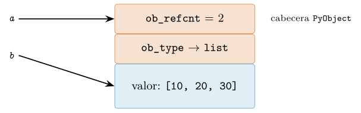
PyObject) con el contador de referencias ob_refcnt y un puntero ob_type al objeto que describe su tipo, seguida del valor. Los nombres a y b son dos etiquetas que apuntan al mismo objeto (aliasing): a is b es True y el contador de referencias vale 2. [Esquema conceptual.]La cabecera de un objeto en CPython
Para cerrar la sección, bajemos un peldaño en el nivel de abstracción y preguntémonos cómo materializa CPython estos tres atributos. La respuesta explica de dónde salen la identidad y el tipo, y prepara el terreno para el modelo de memoria que necesitaremos al optimizar código numérico con NumPy (cap. 7). La idea, ilustrada en la figura 2.1, es que en CPython cada objeto se almacena en el montón (heap) precedido de una pequeña cabecera común a todos los objetos, la estructura PyObject. Esa cabecera contiene dos campos esenciales (Shaw 2021; Ramalho 2022):
El contador de referencias (
ob_refcnt): un entero que registra cuántas referencias apuntan al objeto en este instante. Cada vez que un nuevo nombre, elemento de contenedor o argumento pasa a apuntar al objeto, el contador se incrementa; cuando una referencia desaparece, se decrementa. Al llegar a cero, el objeto ya no es alcanzable y CPython libera su memoria de inmediato. Este mecanismo de conteo de referencias es la primera línea de la gestión automática de memoria de CPython; un recolector de ciclos complementario se encarga de las estructuras que se referencian mutuamente.El puntero al tipo (
ob_type): una referencia al objeto que describe el tipo de este objeto. Es exactamente lo que devuelvetype(x). Gracias a este puntero, el intérprete sabe, ante cualquier objeto, qué operaciones y métodos especiales tiene disponibles: para evaluara + bsigue elob_typedeay busca en él__add__.
Con esta imagen, los tres atributos dejan de ser conceptos abstractos y adquieren una encarnación física. La identidad es la dirección de memoria de la cabecera —de ahí que id(x) devuelva esa dirección en CPython—. El tipo es el objeto al que apunta ob_type. Y el valor es el resto de la estructura, los campos que siguen a la cabecera y que varían según el tipo. Podemos incluso observar el contador de referencias en vivo con sys.getrefcount, teniendo presente que la propia llamada a la función crea una referencia temporal más, por lo que el número que veremos es siempre uno mayor de lo que cabría esperar.
>>> import sys
>>> obj = [10, 20, 30]
>>> sys.getrefcount(obj) # 1 por 'obj' + 1 por el argumento de la llamada
2
>>> otro = obj # otra referencia al MISMO objeto
>>> sys.getrefcount(obj) # ahora 3 (obj, otro y el argumento temporal)
3
>>> del otro # desaparece una referencia
>>> sys.getrefcount(obj)
2Con los tres atributos —identidad, tipo y valor— firmemente asentados, y con la intuición de que un nombre es una etiqueta pegada a un objeto que vive por su cuenta, disponemos ya del vocabulario preciso para atacar el fenómeno que más quebraderos de cabeza provoca a quien llega a Python desde otros lenguajes: la mutabilidad y sus consecuencias sobre las variables, las copias y el paso de argumentos, que es el objeto de la sección siguiente.
Variables como etiquetas: la semántica de la asignación
La primera intuición que casi todo el mundo trae al aprender a programar procede del álgebra escolar y de lenguajes como C: una variable es una caja rotulada que contiene un valor, y asignar consiste en depositar algo dentro de esa caja. Ese modelo mental funciona razonablemente para números en una hoja de cálculo, pero en Python es incorrecto y conduce a errores sutiles y persistentes, sobre todo cuando manipulamos las estructuras de datos mutables que dominan la ciencia de datos: listas, diccionarios, conjuntos, ndarray de NumPy o DataFrame de pandas. Para razonar con precisión sobre el comportamiento de nuestros programas necesitamos sustituir la metáfora de la caja por otra más fiel al modelo de datos de Python: la de la etiqueta. Este es, según Ramalho (2022), uno de los puntos donde la semántica de Python se aparta más de la de otros lenguajes populares, y comprenderlo bien es requisito previo para dominar la distinción entre mutabilidad e identidad que abordaremos en §2.3.
La metáfora correcta: nombres pegados a objetos
En el modelo de datos de Python, todo dato es un objeto: una entidad que vive en la memoria y que posee tres atributos indisolubles, su identidad, su tipo y su valor (Python Software Foundation, s. f.). Una variable no es un objeto ni lo contiene; es simplemente un nombre, una etiqueta que hemos pegado a un objeto que ya existe. La asignación x = obj no crea una caja llamada x donde se copia obj; crea (o reutiliza) el nombre x y lo hace referir al objeto que resulta de evaluar la expresión de la derecha. Por eso conviene leer el signo igual no como «guarda esto en aquello», sino como «pega la etiqueta de la izquierda al objeto de la derecha».
De esta lectura se deriva de inmediato la consecuencia más importante. Consideremos:
a = [1, 2, 3] # se crea una lista; el nombre a queda pegado a ella
b = a # NO se copia la lista: b se pega al MISMO objeto
b.append(4) # mutamos el objeto compartido a traves de la etiqueta b
print(a) # -> [1, 2, 3, 4] a tambien lo ve!
print(a is b) # -> True son el mismo objeto, no dos copias igualesLa sentencia b = a no duplica la lista: coloca una segunda etiqueta sobre el objeto que ya tenía la etiqueta a. A partir de ese instante a y b son dos nombres del mismo objeto, y cualquier mutación realizada a través de uno de ellos es visible a través del otro, porque no hay dos objetos, sino uno solo con dos etiquetas. El operador is, que compara identidad y no valor, lo confirma devolviendo True. La figura 2.2 representa esta situación: dos nombres, una única entidad en memoria.
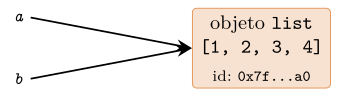
a = [1, 2, 3] y b = a, ambos nombres son etiquetas pegadas al mismo objeto en memoria. La asignación no copia: comparte. Mutar el objeto por cualquiera de las etiquetas es visible por la otra.Esta asimetría con la metáfora de la caja tiene un corolario terminológico útil: en Python los objetos se ligan (bind) a nombres, no se almacenan en variables. El lado izquierdo de una asignación no evalúa a un objeto, sino que designa un destino de ligadura (binding target); el lado derecho sí es una expresión que produce un objeto (Python Software Foundation 2026). Por eso una misma asignación puede ligar varios nombres a la vez (x = y = obj pega dos etiquetas al mismo objeto) y por eso el desempaquetado p, q = par liga p y q a los elementos ya existentes del iterable, sin copiarlos.
El recuento de referencias hace tangible el modelo
La idea de «etiqueta» no es una simple analogía pedagógica: se corresponde con la implementación real de CPython, el intérprete de referencia. Internamente, cada objeto lleva un contador de cuántas etiquetas (referencias) lo apuntan; cuando ese contador llega a cero, la memoria del objeto puede liberarse (Shaw 2021). Podemos observar el mecanismo con sys.getrefcount, teniendo en cuenta que el propio argumento pasado a la función crea una referencia temporal adicional, de modo que el valor devuelto siempre es uno más de las etiquetas «reales»:
import sys
a = [1, 2, 3]
sys.getrefcount(a) # p. ej. 2 (a + el parametro temporal) [sintetico]
b = a
sys.getrefcount(a) # p. ej. 3 (a, b + el parametro temporal)
del b # quitamos la etiqueta b; el objeto sigue vivo por a
sys.getrefcount(a) # de nuevo 2La sentencia del b no destruye ningún objeto: elimina el nombre b y decrementa el contador del objeto al que apuntaba. Solo si ese contador cae a cero el recolector reclama la memoria. Esta es exactamente la distinción entre despegar una etiqueta y destruir la cosa etiquetada, y explica por qué en Python nunca «borramos un valor» directamente: solo dejamos de referirlo. Los valores exactos que devuelve getrefcount dependen de la versión y del estado del intérprete —CPython comparte y reutiliza objetos pequeños, y desde versiones recientes ciertos objetos son «inmortales»—, por lo que deben tomarse como ilustración cualitativa, no como contrato (Python Software Foundation, s. f.).
Paso de argumentos: call by sharing
El mismo mecanismo gobierna lo que ocurre al invocar una función, y aquí es donde la metáfora correcta previene los errores más costosos en ciencia de datos. Python no pasa argumentos «por valor» (copiando el dato) ni «por referencia» en el sentido de C++ (pasando la dirección de la variable del llamante). Emplea lo que la literatura denomina call by sharing o, en la formulación de Ramalho (2022), paso «por referencia de objeto»: los parámetros de la función se convierten en nombres locales que quedan ligados a los mismos objetos que recibió como argumentos. La función no recibe una copia del objeto ni una copia de la variable del llamante; recibe una etiqueta más pegada al objeto original.
De esta definición se siguen dos reglas que parecen contradictorias hasta que se piensa en términos de etiquetas:
Si dentro de la función mutamos el objeto in situ (métodos como
append, asignación a un índice,obj.attr = ...), el cambio afecta al único objeto compartido y por tanto es visible fuera.Si dentro de la función reasignamos el parámetro a un objeto nuevo, solo despegamos la etiqueta local y la volvemos a pegar en otra parte; la etiqueta del llamante sigue intacta, y fuera no se observa nada.
El siguiente listado contrasta ambos casos de forma explícita:
def anadir_elemento(lista, x):
lista.append(x) # MUTA el objeto compartido -> visible fuera
def reasignar(lista):
lista = [99] # REBIND local: la etiqueta del llamante no cambia
return lista
nums = [1, 2, 3]
anadir_elemento(nums, 4)
print(nums) # -> [1, 2, 3, 4] la mutacion se propaga
r = reasignar(nums)
print(nums) # -> [1, 2, 3, 4] sin cambios: solo hubo rebind local
print(r) # -> [99] el objeto nuevo, devuelto aparteEn anadir_elemento, el parámetro lista es una etiqueta adicional sobre el mismo objeto que nums; append lo modifica y el efecto trasciende la función. En reasignar, la asignación lista = [99] crea un objeto nuevo y hace que el nombre local lista lo apunte, sin tocar en absoluto la ligadura de nums en el ámbito llamante. La única forma de que el llamante «vea» ese nuevo objeto es que la función lo devuelva y el llamante lo reciba con otra asignación. La tabla 2.2 resume el criterio.
| Operación en el cuerpo | Ejemplo | ¿Visible fuera? |
|---|---|---|
| Mutación in situ (mutable) | lista.append(x) |
Sí |
| Asignación por índice/clave | d[k] = v |
Sí |
| Reasignación del parámetro | lista = [99] |
No |
| Operador in situ sobre inmutable | n += 1 (con int) |
No |
El caso resbaladizo de los operadores in situ
La última fila de la tabla 2.2 anticipa una trampa clásica. El operador += no tiene un significado único: su efecto depende de si el objeto ligado al nombre es mutable o no. Para una lista, seq += [0] invoca el método in situ __iadd__, que muta el objeto existente y lo devuelve; para una tupla o un entero, que son inmutables y carecen de __iadd__, += degenera en seq = seq + (0,): construye un objeto nuevo y religa el nombre local. Dentro de una función, la diferencia decide si el cambio se propaga:
def crece(seq):
seq += [0] # lista: __iadd__ muta in situ -> se ve fuera
def crece_tup(seq):
seq += (0,) # tupla: crea objeto nuevo, rebind local -> NO se ve
xs = [1]; crece(xs); print(xs) # -> [1, 0]
ts = (1,); crece_tup(ts); print(ts) # -> (1,)Este comportamiento aparentemente caprichoso es en realidad perfectamente coherente con el modelo de etiquetas: un objeto mutable puede cambiar «bajo» sus etiquetas, mientras que uno inmutable jamás cambia, de modo que cualquier «modificación» aparente es en verdad la creación de otro objeto y el reetiquetado del nombre. La conexión entre mutabilidad, identidad y estas semánticas de asignación se desarrolla en profundidad en §2.3.
Interiorizar que «una variable es una etiqueta, no una caja» reordena de golpe un conjunto de comportamientos que de otro modo parecen reglas inconexas: por qué b = a no copia, por qué modificar una lista dentro de una función se ve fuera pero reasignarla no, por qué += se comporta de dos maneras y por qué un argumento por defecto mutable «recuerda» entre llamadas. Todos son la misma idea vista desde ángulos distintos. Con esta base establecida, estamos en condiciones de precisar qué significa exactamente que un objeto sea mutable o inmutable, y de introducir las herramientas —is, id, copias superficiales y profundas— que nos permiten distinguir identidad de igualdad, tarea a la que dedicamos §2.3.
Mutabilidad, copias y aliasing
En §2.4 vimos que toda variable de Python es una referencia a un objeto que vive en el montículo, y que la identidad de ese objeto (id(x)) es independiente de su valor. Esa arquitectura de referencias tiene una consecuencia que domina la depuración cotidiana en ciencia de datos: dos nombres pueden apuntar al mismo objeto, y si ese objeto se puede modificar en el sitio, modificarlo a través de un nombre lo modifica para todos. La distinción entre objetos mutables e inmutables, y entre las diversas formas de copiar, no es un tecnicismo académico: es la frontera entre un cálculo reproducible y un DataFrame que cambia bajo nuestros pies sin que sepamos por qué. El modelo oficial de datos (Python Software Foundation, s. f.) define la mutabilidad como una propiedad del tipo, no del valor concreto, y de ahí se derivan todas las reglas que siguen.
Objetos mutables e inmutables
Un objeto es inmutable cuando su estado interno no puede alterarse tras la construcción: cualquier operación que aparente cambiarlo produce en realidad un objeto nuevo. Son inmutables int, float, bool, complex, str, bytes, tuple y frozenset. Es mutable el objeto cuyo contenido puede cambiar conservando su identidad: list, dict, set, bytearray y, salvo que el autor lo impida, los objetos de clases definidas por el usuario.
La prueba operativa es observar id antes y después de una asignación aumentada:
x = 10
print(id(x)) # p. ej. 140234... [sintetico]
x += 1 # NO muta el 10: crea el objeto 11 y reapunta x
print(id(x)) # id distinto: x es ahora otra referencia
lista = [1, 2, 3]
print(id(lista))
lista += [4] # muta la lista en el sitio (equivale a extend)
print(id(lista)) # MISMO id: el objeto no ha cambiado de identidadEl punto crítico es que x += 1 sobre un int y lista += [4] sobre una list se escriben igual pero significan cosas opuestas. Para el inmutable, += es azúcar de x = x + 1: construye un objeto nuevo y reasigna el nombre. Para el mutable, += invoca __iadd__, que modifica el objeto existente y devuelve el mismo objeto. Reasignar un inmutable, por tanto, siempre crea un objeto nuevo; nunca hay riesgo de que otro nombre «vea» el cambio, porque no hay cambio, sino sustitución de la referencia local.
Hashabilidad, claves de diccionario y la tabla de tipos
La mutabilidad determina si un objeto puede ser hashable, es decir, si posee un valor hash() constante durante toda su vida y una relación de igualdad coherente con él (§2.4). El requisito de constancia es lo que descalifica a los mutables: si el hash de una clave pudiera cambiar tras insertarla, quedaría archivada en el «cubo» equivocado de la tabla y se volvería inencontrable. Por eso las claves de un dict y los elementos de un set deben ser hashables y, en la práctica, inmutables. Un frozenset es hashable y sirve de clave; un set no. Una tuple de elementos hashables es clave válida (por ejemplo, coordenadas (fila, columna)); una tuple que contenga una lista, no.
| Tipo | Categoría | Hashable | ¿Clave de dict? |
Muta en el sitio con |
|---|---|---|---|---|
int, float, bool |
Inmutable | Sí | Sí | — |
str, bytes |
Inmutable | Sí | Sí | — |
tuple |
Inmutable\(^{*}\) | Si sus elementos | Si sus elementos | — |
frozenset |
Inmutable | Sí | Sí | — |
list |
Mutable | No | No | append, +=, sort |
dict |
Mutable | No | No | d[k]=v, update |
set |
Mutable | No | No | add, |=, discard |
bytearray |
Mutable | No | No | b[i]=n, extend |
| Objeto de usuario | Mutable\(^{\dagger}\) | Por identidad | Sí | asignación de atributos |
El asterisco de la tuple recuerda la advertencia de la caja anterior: su inmutabilidad es superficial. El daga de los objetos de usuario indica que su mutabilidad depende del diseño de la clase; con __slots__ o congelando atributos (por ejemplo, un @dataclass(frozen=True)) se puede emular inmutabilidad. Cabe subrayar que ser hashable «por identidad» no es lo mismo que serlo «por valor»: dos instancias distintas con los mismos atributos son claves diferentes salvo que la clase redefina __eq__ y __hash__ de forma coherente (Slatkin 2020).
El argumento mutable por defecto
Uno de los errores más persistentes de Python nace de combinar mutabilidad con un detalle del modelo de ejecución: las expresiones por defecto de los parámetros se evalúan una sola vez, en el momento de definir la función, no en cada llamada (Python Software Foundation 2026). Si ese valor por defecto es un objeto mutable, todas las invocaciones que no pasen el argumento comparten el mismo objeto, que va acumulando estado entre llamadas.
def agrega(elemento, destino=[]): # TRAMPA: la lista se crea UNA vez
destino.append(elemento)
return destino
print(agrega(1)) # [1]
print(agrega(2)) # [1, 2] <- la lista persiste entre llamadas
print(agrega(3)) # [1, 2, 3]
# La misma lista es reutilizada porque agrega.__defaults__ la contiene.El comportamiento no es un fallo del intérprete, sino la consecuencia lógica de que [] se evaluó una vez y quedó guardado en agrega.__defaults__. El arreglo idiomático es usar un centinela inmutable, casi siempre None, y construir el objeto fresco dentro del cuerpo:
def agrega(elemento, destino=None):
if destino is None:
destino = [] # objeto nuevo en CADA llamada sin argumento
destino.append(elemento)
return destino
print(agrega(1)) # [1]
print(agrega(2)) # [2] <- ya no se comparte estadoSe emplea None y no, por ejemplo, una lista vacía como centinela porque None es un objeto singleton inmutable y la comprobación is None es inequívoca y barata. En anotaciones de tipos, esto se expresa como Optional[list] o list | None (Rossum et al. 2014). La regla general es rotunda: nunca se debe usar un mutable (list, dict, set) como valor por defecto de un parámetro.
Aliasing y sus errores
Hay aliasing cuando dos o más nombres refieren al mismo objeto. La asignación b = a nunca copia el objeto: copia la referencia, de modo que a y b son alias del mismo montón de bytes y a is b es cierto. Si el objeto es inmutable, el aliasing es inocuo, porque ninguna operación puede alterarlo. Si es mutable, cualquier mutación a través de un alias es visible a través de los demás.
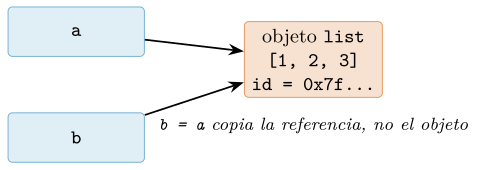
b = a, ambos alias comparten identidad; a.append(4) es observable desde b porque no hay dos objetos, sino dos etiquetas sobre el mismo.a = [1, 2, 3]
b = a # b NO es una copia: es un alias
b.append(4)
print(a) # [1, 2, 3, 4] <- a "cambio" sin tocarlo
print(a is b) # True
matriz = [[0] * 3] * 3 # TRAMPA: 3 alias de la MISMA fila interna
matriz[0][0] = 9
print(matriz) # [[9, 0, 0], [9, 0, 0], [9, 0, 0]]El segundo caso es especialmente traicionero en preprocesamiento de datos: [[0]*3]*3 no crea tres filas, sino una fila replicada como tres alias; escribir en una escribe en todas. La construcción correcta genera un objeto por fila con una comprensión: [[0]*3 for _ in range(3)]. El aliasing también acecha en igualdad frente a identidad: == compara valor (invoca __eq__) mientras que is compara identidad; confundirlos produce bugs sutiles cuando dos objetos son iguales pero no idénticos, o viceversa.
Copia superficial frente a copia profunda
Cuando de verdad queremos un objeto independiente hay que copiar explícitamente, y aquí la profundidad importa. Una copia superficial (shallow) crea un contenedor nuevo cuyas ranuras apuntan a los mismos objetos internos que el original. Para listas, las formas idiomáticas son list(a), el rebanado completo a[:] y copy.copy(a); para diccionarios, dict(d) o d.copy(). Todas comparten un problema: si el contenedor aloja objetos mutables anidados, esos anidados siguen siendo compartidos.
import copy
original = [[1, 2], [3, 4]]
superficial = original[:] # o list(original), o copy.copy(original)
superficial[0].append(99) # muta la sublista COMPARTIDA
print(original) # [[1, 2, 99], [3, 4]] <- afectado
profunda = copy.deepcopy(original) # clona recursivamente todo el arbol
profunda[0].append(0)
print(original) # inalterado: arboles independientesLa copia profunda (copy.deepcopy) recorre recursivamente el objeto y reconstruye un árbol enteramente nuevo, sin ninguna referencia compartida con el original; además lleva un registro (memo) que preserva estructuras compartidas y detecta ciclos, de modo que un objeto que se referencia a sí mismo no provoca recursión infinita. El coste no es gratuito: deepcopy es considerablemente más lento y más voraz en memoria que una copia superficial, porque materializa cada nodo del grafo (Beazley y Jones 2013). La elección correcta es un juicio de diseño: úsese la copia superficial cuando solo se vaya a reemplazar el contenedor de primer nivel, y la profunda cuando se vayan a mutar niveles internos de una estructura anidada que debe permanecer aislada del original.
Como regla mnemotécnica que atraviesa todo el capítulo: la asignación reparte etiquetas, no objetos; la mutación viaja por todas las etiquetas que comparten un objeto; y solo una copia —superficial si basta con el primer nivel, profunda si hay anidamiento— corta el hilo que une el original con su presunto duplicado.
Interning y caché: cuando is engaña, y el contrato hash/eq
Hemos establecido en §2.1.1 que is compara identidad (la respuesta a id(a) == id(b)) y que == compara valor (delegando en __eq__). En teoría son ejes ortogonales: dos objetos distintos pueden tener el mismo valor. En la práctica, sin embargo, quien juega en la consola tropieza pronto con un fenómeno desconcertante: a veces dos expresiones que deberían producir objetos independientes resultan ser el mismo objeto, y is devuelve True donde nada nos hacía esperarlo. Esta sección explica por qué ocurre, por qué es peligroso apoyarse en ello, y cómo esa misma maquinaria de compartición nos conduce al contrato que todo objeto debe respetar para vivir dentro de un set o de un dict: la coherencia entre __hash__ y __eq__.
La caché de enteros pequeños
Considérese la siguiente sesión interactiva, que parece contradecir todo lo dicho sobre identidad y valor:
>>> a = 256
>>> b = 256
>>> a is b # el mismo objeto?
True
>>> a = 257
>>> b = 257
>>> a is b # y ahora?
FalseDos enteros con el valor 256 comparten identidad; dos enteros con el valor 257 no. No hay nada mágico ni aleatorio: es una optimización de CPython, el intérprete de referencia. Durante su arranque, CPython precrea todos los objetos enteros del rango de \(-5\) a \(256\) inclusive y los guarda en una tabla interna. Cada vez que el intérprete necesita un entero dentro de ese rango, en lugar de asignar memoria para un objeto nuevo devuelve un puntero al ejemplar ya existente. Por eso todas las apariciones de 256 en un programa son literalmente el mismo objeto, mientras que 257 queda fuera de la caché y cada literal engendra un objeto fresco (Shaw 2021).
El peligro no es la caché en sí, sino la tentación que crea. Como a is b funciona con enteros pequeños, un principiante puede concluir que is “también sirve para comparar números” y adoptarlo como hábito. El código funcionará en todas sus pruebas con valores diminutos y fallará silenciosamente el día que un dato real valga 1000. Es el peor tipo de error: intermitente, dependiente de los datos y sensible a la versión del intérprete.
Interning de cadenas
El mismo fenómeno reaparece con las cadenas, mediante un mecanismo llamado interning: mantener una tabla global de cadenas únicas de modo que dos literales de igual contenido apunten al mismo objeto. CPython internaliza automáticamente algunas cadenas, en particular las que parecen identificadores (compuestas de letras, dígitos y guiones bajos) y ciertos literales cortos conocidos en tiempo de compilación:
>>> x = "hola"
>>> y = "hola"
>>> x is y # literal que parece identificador: internado
True
>>> p = "hola mundo!" # contiene espacio y signo
>>> q = "hola mundo!"
>>> p is q # no internado automaticamente
FalseLa motivación vuelve a ser el rendimiento, pero en un contexto más profundo. El propio intérprete manipula constantemente cadenas que representan nombres: identificadores de variables, atributos, claves de los diccionarios internos que implementan los espacios de nombres. Si esas cadenas están internadas, comparar dos nombres se reduce a comparar dos punteros (una instrucción) en lugar de recorrer carácter a carácter; y el buscador de atributos, que es una operación caliente en cualquier programa, se acelera notablemente. Por eso los nombres que aparecen en el código fuente se internan de forma agresiva (Ramalho 2022).
Cuando necesitamos garantizar el interning de cadenas construidas en tiempo de ejecución por ejemplo, millones de etiquetas categóricas leídas de un fichero, muchas de ellas repetidas disponemos de la función explícita sys.intern. Internar manualmente las claves permite que las comparaciones posteriores sean por identidad y que el almacenamiento colapse las copias duplicadas en un único objeto, lo que ahorra memoria de forma considerable en conjuntos de datos con baja cardinalidad:
>>> import sys
>>> a = sys.intern("categoria_" + "42") # construida en runtime
>>> b = sys.intern("categoria_42")
>>> a is b
TrueAdviértase, no obstante, que sys.intern es una optimización, no un cambio de semántica: la corrección del programa nunca debe depender de que dos cadenas compartan identidad. Es una herramienta para reducir memoria y acelerar comparaciones en puntos calientes bien medidos, no una licencia para usar is sobre cadenas en la lógica de negocio. La representación interna de las cadenas de CPython, por lo demás, es adaptativa: el intérprete elige entre codificaciones de 1, 2 o 4 bytes por carácter según el mayor punto de código presente (Löwis 2010), y volveremos sobre la naturaleza del texto y de Unicode en el cap. 5.
La regla: is solo para singletons
De los dos apartados anteriores extraemos una regla operativa que conviene grabar sin excepciones:
Nunca uses
ispara comparar valores números, cadenas, tuplas, cualquier cosa cuyo interés sea el contenido. Usa==. Reservaisexclusivamente para comprobar identidad frente a singletons:None, y ocasionalmenteTrue,Falseo un objeto centinela definido por ti.
El caso canónico es x is None. Aquí is es correcto por diseño: None es un singleton existe un único objeto None en todo el intérprete, de modo que preguntar por identidad es exactamente lo que queremos, y además es más rápido y no puede ser subvertido por un __eq__ malicioso o mal escrito. La guía de estilo oficial es tajante en este punto: las comparaciones con None deben hacerse siempre con is o is not, nunca con los operadores de igualdad (Rossum et al. 2001).
| Comprobación | Correcto | Motivo |
|---|---|---|
¿Es el objeto None? |
is |
None es singleton |
| ¿Es un centinela dado? | is |
identidad deliberada |
| ¿Dos enteros valen lo mismo? | == |
compárese valor, no caché |
| ¿Dos cadenas valen lo mismo? | == |
el interning no es garantía |
| ¿Dos listas tienen igual contenido? | == |
is solo si es el mismo objeto |
Conviene subrayar el estatus epistemológico de todo lo anterior: la caché de enteros y el interning de cadenas son detalles de implementación de CPython, no propiedades del lenguaje Python. La referencia del lenguaje solo promete que is compara identidad de objetos; cuándo dos evaluaciones producen el mismo objeto queda deliberadamente sin especificar para tipos inmutables (Python Software Foundation 2026). Un programa correcto es aquel cuya salida no cambiaría si el intérprete decidiese, o dejase de decidir, compartir un objeto concreto.
El contrato hashable: __hash__ y __eq__
La misma idea de “compartir para no duplicar” que motiva el interning es, en el fondo, lo que hace un set o un dict: para saber si un elemento ya está presente, la estructura no puede permitirse comparar el candidato con todos los existentes, uno a uno. En su lugar calcula un hash un entero derivado del valor y lo usa como dirección aproximada dentro de una tabla. Solo compara con los pocos objetos que caen en el mismo cubo. Esta es la razón de que set y dict ofrezcan pertenencia y búsqueda en tiempo constante amortizado, y también la razón de que sus elementos y claves deban ser hashables.
Un objeto es hashable si implementa __hash__ (que devuelve un entero estable durante la vida del objeto) y __eq__ (que decide igualdad). El modelo de datos de Python impone entre ambos un contrato de coherencia absolutamente ineludible (Python Software Foundation, s. f.):
Si
a == b, entonces obligatoriamentehash(a) == hash(b).
La razón es puramente mecánica. La tabla localiza a b calculando su hash y saltando al cubo correspondiente. Si buscamos a, que es igual a b pero produce un hash distinto, la tabla saltará a otro cubo, no encontrará a b allí, y declarará erróneamente que el elemento no existe. El objeto quedaría “perdido” dentro de la propia estructura que lo contiene. El recíproco no se exige: dos objetos distintos pueden compartir hash (una colisión), y la tabla lo resuelve comparando con __eq__. Lo prohibido es lo contrario: objetos iguales con hashes distintos.
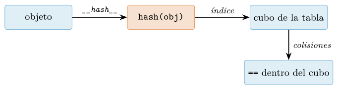
set o dict: __hash__ selecciona el cubo; __eq__ resuelve las colisiones dentro de él. Si objetos iguales dan hashes distintos, van a cubos distintos y jamás se comparan.Hay aquí un punto sutil que merece detenerse. Cuando definimos __eq__ en una clase para dar semántica de valor, Python anula automáticamente el __hash__ heredado, fijándolo a None y volviendo la instancia no hashable. Es una salvaguarda deliberada del lenguaje: al cambiar el criterio de igualdad, el hash por defecto (basado en la identidad) dejaría de ser coherente con él, así que Python prefiere prohibir el uso en set/dict antes que permitir una incoherencia silenciosa:
class Punto:
def __init__(self, x, y):
self.x, self.y = x, y
def __eq__(self, otro): # damos semantica de valor...
return (isinstance(otro, Punto)
and (self.x, self.y) == (otro.x, otro.y))
p = Punto(1, 2)
print(Punto.__hash__) # -> None (anulado!)
{p} # TypeError: unhashable type: 'Punto'La solución correcta es proporcionar un __hash__ coherente, derivándolo de exactamente los mismos atributos que participan en __eq__. El modismo idiomático consiste en delegar en el hash de una tupla con esos atributos, que ya cumple el contrato por construcción (Ramalho 2022):
class Punto:
def __init__(self, x, y):
self.x, self.y = x, y
def __eq__(self, otro):
return (isinstance(otro, Punto)
and (self.x, self.y) == (otro.x, otro.y))
def __hash__(self):
return hash((self.x, self.y)) # mismos campos que __eq__
p, q = Punto(1, 2), Punto(1, 2)
print(p == q, hash(p) == hash(q)) # True True -> contrato OK
print(len({p, q})) # 1 -> colapsan en el setEn síntesis, los dos temas de esta sección son la misma moneda vista por sus dos caras. El interning y la caché de enteros son el intérprete compartiendo objetos por su cuenta para ahorrar recursos, algo que jamás debemos observar con is en la lógica del programa; el contrato hash/eq es la disciplina que nosotros debemos respetar para que las estructuras que comparten y localizan objetos por valor set y dict funcionen correctamente. Ambas descansan sobre la distinción esencial entre identidad y valor con la que abrimos el capítulo, y ambas ilustran por qué conocer el modelo de datos de Python, y no solo su sintaxis, separa al programador competente del experto (Ramalho 2022).
Gestión de memoria: conteo de referencias y recolección de basura
En los capítulos anteriores hemos insistido en que, en Python, una variable no contiene un objeto sino que es una etiqueta que apunta a un objeto residente en el montículo (heap). Esta idea, aparentemente inocua, tiene una consecuencia profunda: si las variables son meras etiquetas, ¿quién decide cuándo un objeto ha dejado de ser útil y su memoria puede reciclarse? En lenguajes como C o C++ esa decisión recae en el programador, que debe emparejar cada reserva con su correspondiente liberación. Python, en cambio, pertenece a la familia de lenguajes con gestión automática de memoria: el intérprete se encarga de reclamar los objetos inalcanzables sin intervención explícita. Comprender cómo lo hace no es un lujo académico; para quien procesa conjuntos de datos de gigabytes, la diferencia entre un programa que cabe en memoria y uno que agota la RAM y comienza a paginar en disco reside, muchas veces, en detalles del modelo de datos que este apartado desgrana.
La implementación de referencia del lenguaje, CPython, combina dos mecanismos complementarios: un conteo de referencias (reference counting) que actúa de forma inmediata y determinista, y un recolector de ciclos (cyclic garbage collector) que interviene periódicamente para resolver el único caso que el conteo no sabe tratar. Conviene subrayar desde el principio que este diseño es propio de CPython y no forma parte de la especificación del lenguaje (Python Software Foundation 2026): otras implementaciones, como PyPy o Jython, prescinden del conteo de referencias y emplean recolectores de generaciones o el de la JVM. El código idiomático no debería depender del momento exacto en que se libera un objeto, pero sí conviene entender el mecanismo dominante para razonar sobre el consumo de memoria en el intérprete que casi todos usamos en ciencia de datos (Shaw 2021).
El conteo de referencias
La idea central es sencilla y elegante. Cada objeto de CPython lleva incrustado en su cabecera un contador entero, el campo ob_refcnt, que registra cuántas referencias vivas apuntan a él en ese instante. Cada vez que una nueva etiqueta pasa a referenciar el objeto —una asignación, la inclusión en una lista, el paso como argumento a una función— el contador se incrementa; cada vez que una referencia desaparece —reasignación de la variable, del, salida del ámbito de una función, eliminación de un elemento de un contenedor— el contador se decrementa. En el preciso momento en que el contador alcanza cero, el objeto se destruye de inmediato: se invoca su __del__ si lo tuviera, se liberan las referencias que él mismo mantenía a otros objetos (lo que puede desencadenar en cascada más liberaciones) y su memoria se devuelve al asignador (Shaw 2021).
Podemos observar el contador con la función sys.getrefcount, teniendo presente una sutileza que confunde a todo principiante: el propio acto de pasar el objeto como argumento a getrefcount crea una referencia temporal adicional, de modo que el valor devuelto es siempre uno más de lo que cabría esperar.
import sys
datos = [1, 2, 3] # el objeto lista tiene 1 referencia: 'datos'
print(sys.getrefcount(datos)) # -> 2 (datos + el argumento temporal)
otro = datos # segunda etiqueta al MISMO objeto
print(sys.getrefcount(datos)) # -> 3
del otro # se elimina una referencia
print(sys.getrefcount(datos)) # -> 2
lista_de_listas = [datos, datos] # dos referencias mas
print(sys.getrefcount(datos)) # -> 4La virtud de este esquema es su inmediatez y su determinismo: la memoria se recupera en el mismo punto del programa en que el último uso desaparece, sin esperar a una pasada de recolección diferida. Esto reduce el pico de memoria y hace el comportamiento predecible, propiedad muy valiosa cuando se manipulan objetos voluminosos. Su coste es doble. Primero, cada operación con referencias implica actualizar contadores, un trabajo constante pero omnipresente que penaliza el rendimiento y, sobre todo, complica la paralelización con hilos: es precisamente la necesidad de proteger estos contadores frente a accesos concurrentes lo que motivó históricamente el Global Interpreter Lock (Shaw 2021). Segundo —y este es el problema conceptual serio—, el conteo de referencias es incapaz, por sí solo, de reclamar los ciclos de referencia.
El problema de los ciclos de referencia
Consideremos dos objetos que se referencian mutuamente: a apunta a b y b apunta a a. Aunque ninguna variable externa los alcance ya, cada uno mantiene vivo al otro, de modo que sus contadores nunca bajan de uno. El conteo de referencias, que solo mira contadores locales, los considera erróneamente en uso y no los libera: constituyen una fuga de memoria (memory leak). La figura 2.5 ilustra el caso mínimo.
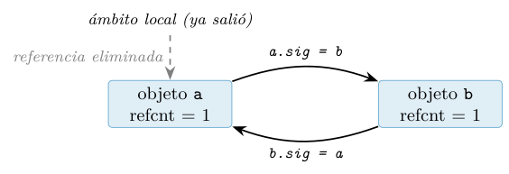
a ni a b, pero ambos contadores permanecen en 1 por la referencia mutua. Solo el recolector cíclico puede reclamarlos.El siguiente listado construye ese ciclo y demuestra que, tras del, los objetos siguen existiendo:
import gc
class Nodo:
def __init__(self, nombre):
self.nombre = nombre
self.sig = None
def __del__(self):
print(f"liberando {self.nombre}")
a = Nodo("a")
b = Nodo("b")
a.sig = b # a -> b
b.sig = a # b -> a (ciclo cerrado)
del a, b # eliminamos las etiquetas externas...
# ...pero NO se imprime "liberando": los objetos siguen vivos.
gc.collect() # forzamos el recolector ciclico
# ahora si: "liberando a" / "liberando b"Aquí interviene el segundo mecanismo. El módulo gc implementa un recolector cíclico generacional que, complementando al conteo, detecta y reclama estos grupos de objetos mutuamente inaccesibles. Su algoritmo, en esencia, recorre los objetos contenedores (aquellos que pueden apuntar a otros: listas, diccionarios, instancias de clase, tuplas con contenido mutable), calcula cuántas de sus referencias son internas al grupo candidato y, restándolas del contador real, descubre qué objetos carecen de referencias externas. Los que quedan aislados forman basura cíclica y se liberan. Para amortizar el coste, el recolector agrupa los objetos en tres generaciones: los recién creados se examinan con frecuencia y, si sobreviven, ascienden a generaciones más viejas que se revisan cada vez menos, bajo la hipótesis empírica de que la mayoría de los objetos mueren jóvenes (Shaw 2021).
import gc
gc.get_count() # (n0, n1, n2): asignaciones desde la ultima pasada
gc.get_threshold() # (700, 10, 10) por defecto: umbrales de disparo
gc.disable() # desactiva el recolector ciclico (con cuidado!)
# ... seccion critica sin pausas de GC ...
gc.enable()
# diagnostico de fugas: objetos inalcanzables pero no liberables
gc.collect()
print(gc.garbage) # normalmente [] si todo va bienDesde CPython 3.4 la presencia de un método __del__ ya no impide recolectar un ciclo, por lo que gc.garbage rara vez contiene algo en código moderno. Aun así, los ciclos tienen un coste: retrasan la liberación hasta la siguiente pasada y esa pasada consume CPU. En cargas de datos con muchos objetos de vida corta puede resultar rentable ajustar los umbrales, o incluso gc.disable() durante una fase intensiva de construcción de estructuras y reactivarlo después —técnica que Gorelick y Ozsvald (2020) discuten como parte del ajuste fino del rendimiento. La recomendación general, sin embargo, es no desactivar el recolector salvo tras medir: un ciclo no reclamado es una fuga silenciosa que crece hasta agotar la memoria.
Consecuencias prácticas para la ciencia de datos
Todo lo anterior cristaliza en una regla operativa de enorme utilidad: la memoria de un objeto grande se recupera en cuanto desaparece su última referencia. Esto significa que liberar explícitamente una referencia voluminosa —con del, reasignándola a None, o simplemente dejando que una variable salga de ámbito al terminar una función— devuelve memoria de forma inmediata gracias al conteo de referencias (siempre que el objeto no esté atrapado en un ciclo). Por eso encapsular los pasos de un pipeline en funciones no es solo higiene de código: al retornar cada función, sus variables locales —los DataFrames intermedios, los arrays temporales— pierden su referencia y se liberan, manteniendo bajo el pico de memoria.
import numpy as np
def transforma(ruta):
bruto = np.load(ruta) # array grande en memoria
limpio = bruto[bruto > 0] # copia derivada
return limpio.mean()
# al retornar: 'bruto' y 'limpio' pierden su referencia
# y su memoria se libera de inmediato (conteo -> 0)
# Version explicita cuando NO hay funcion de por medio:
bruto = np.load("gran_matriz.npy")
resultado = bruto.sum(axis=0)
del bruto # libera ya la matriz completaUn cuidado habitual: en un cuaderno interactivo como IPython o Jupyter, la variable especial _ y el historial Out guardan referencias a los últimos resultados, de modo que un array que creemos liberado puede seguir vivo porque el intérprete lo retiene (Pérez y Granger 2007). Del mismo modo, una vista de NumPy (slice sin copia) mantiene viva a toda la matriz original aunque solo usemos una porción diminuta: mientras exista la vista, el conteo del array base no llega a cero.
Reducir el peso por instancia con __slots__.
Cuando el problema no es un puñado de objetos gigantes sino millones de objetos pequeños —nodos de un grafo, registros de un flujo, puntos de una nube— el enemigo cambia de cara. Por defecto, cada instancia de una clase Python almacena sus atributos en un diccionario interno, __dict__, cuya flexibilidad (poder añadir atributos arbitrarios en tiempo de ejecución) se paga con un sobrecoste de memoria considerable por instancia. Declarar __slots__ indica a CPython el conjunto fijo de atributos, permitiéndole prescindir del __dict__ y almacenar los atributos en una disposición compacta de tamaño fijo. El ahorro, sobre poblaciones de millones de instancias, ronda con frecuencia el 40 a 50% de la memoria por objeto y mejora además la localidad de acceso (Slatkin 2020).
class PuntoDict: # instancia con __dict__ (flexible, pesado)
def __init__(self, x, y):
self.x = x
self.y = y
class PuntoSlots: # instancia compacta, sin __dict__
__slots__ = ("x", "y")
def __init__(self, x, y):
self.x = x
self.y = y
import sys
print(sys.getsizeof(PuntoDict(1, 2).__dict__)) # el dict pesa aparte
# PuntoSlots no tiene __dict__: no se le pueden anadir atributos nuevos.El precio de __slots__ es la pérdida de dinamismo (no se pueden añadir atributos no declarados) y algunas fricciones con la herencia múltiple. La tabla 2.5 resume las estrategias según el perfil del problema. Conviene recordar, no obstante, que para datos numéricos homogéneos la respuesta correcta casi nunca es una clase Python por punto, sino un único array de NumPy que almacena millones de valores en un bloque contiguo de memoria, sin la cabecera de objeto que cada instancia de Python arrastra; esa es la esencia de la vectorización que desarrollamos en el cap. 7 (Harris et al. 2020).
| Perfil | Síntoma | Estrategia recomendada |
|---|---|---|
| Pocos objetos enormes | Pico de RAM alto | del / salir de ámbito; evitar vistas colgantes |
| Millones de objetos | Sobrecoste por instancia | __slots__ o dataclass con slots=True |
| Datos numéricos homogéneos | Cabecera de objeto por valor | Arrays de NumPy, vectorización (cap. 7) |
| Referencias mutuas | Fuga por ciclos | weakref; diagnosticar con gc |
Medir antes de optimizar.
Ninguna de estas decisiones debe tomarse por intuición: hay que medir. La función sys.getsizeof devuelve el tamaño en bytes del objeto en sí, sin contar recursivamente lo que referencia —por eso una lista de un millón de enteros reporta un tamaño modesto: solo mide el vector de punteros, no los enteros apuntados. Para el consumo real de un fragmento de código conviene recurrir a tracemalloc de la biblioteca estándar o al paquete externo memory_profiler, que instrumenta línea a línea el crecimiento de la memoria residente y revela con precisión dónde se produce el pico (Gorelick y Ozsvald 2020).
import sys, tracemalloc
x = list(range(1_000_000))
print(sys.getsizeof(x)) # ~8 MB: solo el vector de punteros
tracemalloc.start()
y = [i * i for i in range(1_000_000)] # crea 1M de enteros nuevos
actual, pico = tracemalloc.get_traced_memory()
print(f"actual={actual/1e6:.1f} MB pico={pico/1e6:.1f} MB")
tracemalloc.stop()Comprender esta capa —por qué una vista retiene su base, por qué un ciclo no se libera solo, por qué un millón de objetos con __dict__ desborda la RAM que un millón de valores en un array absorbe sin esfuerzo— es lo que separa a quien usa las estructuras de Python de quien las domina. El modelo de datos que hemos estudiado en este capítulo no es un formalismo abstracto: es, en última instancia, el mapa de cómo nuestros datos ocupan la memoria de la máquina, y ese mapa condiciona qué análisis son viables y cuáles agotan los recursos antes de terminar (Ramalho 2022).
Números: enteros exactos, coma flotante y precisión
Los números son el tejido con el que se construye la ciencia de datos, y sin embargo son también la fuente más habitual de errores sutiles y difíciles de diagnosticar. La razón es que la palabra «número» esconde, en Python y en cualquier lenguaje moderno, varias representaciones internas radicalmente distintas: enteros de precisión arbitraria que nunca desbordan, números en coma flotante que aproximan los reales con una fidelidad limitada, decimales de precisión controlada y fracciones exactas. Cada una encarna un compromiso diferente entre exactitud, rango y velocidad. Comprender esos compromisos —y saber cuándo cada representación miente— es un requisito previo para escribir código numérico correcto. Esta sección recorre el modelo numérico de Python desde la aritmética entera exacta hasta las trampas de la coma flotante, sentando las bases de la representación vectorizada que estudiaremos en NumPy (cap. 7).
Enteros de precisión arbitraria
El tipo int de Python es, para quien llega de C, Java o incluso NumPy, una pequeña maravilla: no tiene tamaño fijo. Un int no ocupa 32 ni 64 bits, sino tantos «dígitos» (internamente, palabras de 30 bits en CPython de 64 bits) como haga falta para representar su valor. En consecuencia, la aritmética entera de Python nunca desborda: el resultado de una operación entera es siempre matemáticamente exacto, por grande que sea.
>>> 2 ** 200
1606938044258990275541962092341162602522202993782792835301376
>>> import math
>>> math.factorial(50) # 50! cabe sin problema
30414093201713378043612608166064768844377641568960512000000000000
>>> type(2 ** 200)
<class 'int'>
>>> (10 ** 100) + 1 # un googol mas uno, exacto
100000000000000000000000000000...00000000000000000000000000001Esta propiedad no es gratuita ni universal en la historia del lenguaje. Hasta Python 2, coexistían dos tipos enteros: int, acotado al tamaño de una palabra máquina (típicamente 32 o 64 bits), y long, de precisión arbitraria y marcado con un sufijo L. El PEP 237 (Zadka y van Rossum 2001) unificó ambos: a partir de Python 2.2 el desbordamiento de un int promocionaba de forma transparente a long, y en Python 3 el tipo long desapareció por completo, dejando un único int ilimitado. La distinción, que exigía al programador anticipar el tamaño de sus valores, quedó felizmente enterrada.
El precio de esta comodidad es de dos clases. El primero es el consumo de memoria: cada int de Python es un objeto en el montón, con su cabecera, su contador de referencias (cap. 3) y un vector de dígitos de longitud variable; incluso un entero pequeño ocupa unas decenas de bytes, no los 8 de un int64 nativo. El segundo es el rendimiento: la aritmética sobre un vector de palabras de longitud variable es órdenes de magnitud más lenta que una instrucción máquina de 64 bits. Para el cómputo masivo, esta es precisamente la razón por la que NumPy abandona el int de Python y adopta enteros de anchura fija (int8, int32, int64; véase cap. 7), que sí desbordan silenciosamente y con los que hay que tener el cuidado que el int puro nos ahorra.
Coma flotante IEEE 754 y sus límites
El tipo float de Python es un número en coma flotante de doble precisión conforme al estándar IEEE 754 (IEEE 2019; Goldberg 1991), exactamente el mismo double de C que utiliza el procesador. Su representación reserva 64 bits: 1 de signo, 11 de exponente y 52 de mantisa (más un bit implícito). Con ello cubre un rango enorme —de aproximadamente \(10^{-308}\) a \(10^{308}\)— y ofrece unos 15 a 17 dígitos decimales significativos de precisión.
La clave, y el origen de incontables errores, es que un float tiene tamaño fijo. Solo puede representar exactamente un subconjunto finito de los números reales: aquellos expresables como \(m \cdot 2^{e}\) con una mantisa \(m\) de 53 bits. La inmensa mayoría de los decimales cotidianos —empezando por \(0.1\)— no pertenecen a ese conjunto y se almacenan como la fracción binaria más próxima. El resultado es el ejemplo canónico que todo practicante debe conocer de memoria:
>>> 0.1 + 0.2
0.30000000000000004
>>> 0.1 + 0.2 == 0.3
False
>>> from decimal import Decimal
>>> Decimal(0.1) # lo que 0.1 es REALMENTE por dentro
Decimal('0.1000000000000000055511151231257827021181583404541015625')No hay ningún error en Python: \(0.1\), \(0.2\) y \(0.3\) son, cada uno, la aproximación binaria más cercana a esos decimales, y la suma de las dos primeras aproximaciones no coincide con la aproximación de la tercera. El comportamiento es idéntico en C, Java, JavaScript o cualquier lenguaje que use IEEE 754. La referencia clásica y de lectura obligada sobre por qué esto ocurre y qué garantías ofrece el estándar es el artículo de Goldberg (1991), que todo científico de datos debería haber hojeado al menos una vez.
La consecuencia práctica es una regla que conviene grabar en piedra: nunca compare dos float con ==. En su lugar, pregunte si son suficientemente próximos dentro de una tolerancia. La biblioteca estándar ofrece math.isclose (PEP 485) y NumPy ofrece np.allclose para arrays completos (Harris et al. 2020).
>>> import math
>>> math.isclose(0.1 + 0.2, 0.3) # tolerancia relativa por defecto
True
>>> math.isclose(0.1 + 0.2, 0.3, rel_tol=1e-9, abs_tol=0.0)
True
>>> import numpy as np
>>> np.allclose([0.1 + 0.2, 1e-18], [0.3, 0.0])
TrueEl estándar IEEE 754 define además tres valores especiales que aparecen de forma natural en cálculos reales y que hay que saber manejar: los infinitos con signo (float(’inf’), resultado de un desbordamiento o de dividir por cero en NumPy) y nan (Not a Number, resultado de \(0/0\) o \(\infty - \infty\)). El nan tiene una propiedad desconcertante: no es igual a sí mismo, de modo que nan == nan es False. Para detectarlo se usa math.isnan o np.isnan, nunca una comparación directa.
Exactitud a demanda: Decimal y Fraction
Cuando la exactitud es innegociable —y el ejemplo paradigmático es el dinero—, el float binario es simplemente inadecuado: no puede representar exactamente ni siquiera un céntimo. Python ofrece dos alternativas en la biblioteca estándar. El tipo Decimal (módulo decimal) implementa aritmética de coma flotante en base 10 con precisión y modo de redondeo configurables mediante un contexto; es el tipo indicado para contabilidad, facturación y cualquier dominio con reglas de redondeo legales. El tipo Fraction (módulo fractions) representa números racionales exactos como un par numerador/denominador de enteros de precisión arbitraria, sin error de redondeo alguno.
>>> from decimal import Decimal, getcontext
>>> Decimal('0.1') + Decimal('0.2') # exacto: notese el string
Decimal('0.3')
>>> Decimal('0.1') + Decimal('0.2') == Decimal('0.3')
True
>>> getcontext().prec = 6 # 6 cifras significativas
>>> Decimal(1) / Decimal(7)
Decimal('0.142857')
>>> from fractions import Fraction
>>> Fraction(1, 10) + Fraction(2, 10) == Fraction(3, 10)
True
>>> Fraction(1, 3) + Fraction(1, 6) # simplifica automaticamente
Fraction(1, 2)Obsérvese un detalle imprescindible: Decimal(’0.1’) se construye a partir de la cadena ’0.1’ y es exacto, mientras que Decimal(0.1) —a partir del float— hereda todo el error binario que ya hemos visto. La regla es construir Decimal siempre desde cadenas o enteros, jamás desde float. El coste de esta exactitud es la velocidad: Decimal y Fraction son mucho más lentos que el float nativo y no se vectorizan en NumPy, por lo que se reservan para el dominio financiero o simbólico, no para el cálculo numérico intensivo.
Números complejos y la torre numérica
Python trata los números complejos como ciudadanos de primera clase, sin necesidad de biblioteca alguna. Se escriben con el sufijo j para la parte imaginaria y exponen los atributos .real e .imag. Son imprescindibles en procesamiento de señales, transformadas de Fourier y buena parte del álgebra lineal numérica.
>>> z = 3 + 4j
>>> z.real, z.imag, abs(z) # abs es el modulo: sqrt(3**2 + 4**2)
(3.0, 4.0, 5.0)
>>> (1j) ** 2 # i al cuadrado es -1
(-1+0j)Estos cuatro tipos concretos —int, float, complex y los racionales— no viven aislados, sino que se organizan en una jerarquía abstracta conocida como la torre numérica, formalizada en el módulo numbers (PEP 3141) e inspirada en la de Scheme. La torre define una cadena de clases base abstractas cada vez más generales: Number \(\supset\) Complex \(\supset\) Real \(\supset\) Rational \(\supset\) Integral. Un int es a la vez Integral, Rational, Real, Complex y Number; un float es Real pero no Rational; un complex solo es Complex. Esta jerarquía es lo que permite que las operaciones promocionen el tipo automáticamente (int + float da float; float + complex da complex) y lo que hace posible escribir código genérico que acepte «cualquier número real» comprobando isinstance(x, numbers.Real) (Ramalho 2022).
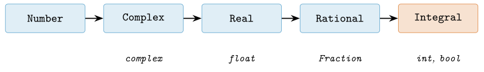
numbers: cada nivel es un subtipo abstracto más específico (izquierda a derecha, de más general a más concreto) y bajo cada clase abstracta figura el tipo concreto que la implementa. Nótese que bool es un subtipo de int.Conviene subrayar una peculiaridad de la torre: en Python bool es un subtipo de int, de modo que True == 1 y False == 0 son True, y True + True vale 2. Esta herencia, discutible desde la ortodoxia pero muy práctica, permite sumar una lista de booleanos para contar cuántos son verdaderos, idioma que reaparecerá al filtrar arrays y máscaras en NumPy y pandas.
Operadores a nivel de bit
Sobre los enteros, Python ofrece el juego habitual de operadores a nivel de bit, heredado de C: conjunción &, disyunción |, disyunción exclusiva ^, negación ~, y los desplazamientos << y >>. Trabajan sobre la representación binaria en complemento a dos y, gracias a la precisión arbitraria del int, no desbordan.
>>> 0b1100 & 0b1010 # AND -> 0b1000
8
>>> 0b1100 | 0b1010 # OR -> 0b1110
14
>>> 5 << 3 # desplazar: multiplica por 2**3
40
>>> 255 & 0xFF, bin(6 ^ 3) # mascara y XOR
(255, '0b101')En ciencia de datos estos operadores aparecen sobre todo en el manejo de banderas empaquetadas, máscaras de bits y, muy señaladamente, en la combinación de máscaras booleanas de NumPy y pandas, donde & y | sustituyen a los operadores lógicos and y or —que no se pueden sobrecargar elemento a elemento (cap. 7).
Panorama comparado de los tipos numéricos
La tabla 2.6 resume los tipos numéricos disponibles y, sobre todo, cuándo usar cada uno. La regla operativa que se desprende de toda la sección es simple: use int para contar sin límites, float para medir y calcular a gran velocidad asumiendo error de redondeo, Decimal o Fraction cuando la exactitud sea legal o matemáticamente obligatoria, y complex para el dominio de señales. Para el cómputo masivo, todos ellos ceden el paso a los dtypes de anchura fija de NumPy (cap. 7).
| Tipo | Exactitud | Uso recomendado |
|---|---|---|
int |
exacto, sin límite | contar, indexar, aritmética entera de cualquier tamaño |
float |
aproximado (IEEE 754) | medir y calcular deprisa; nunca comparar con == |
Decimal |
exacto en base 10 | dinero y contabilidad; redondeo controlado |
Fraction |
exacto (racional) | cálculo simbólico y racional sin redondeo |
complex |
aproximado (IEEE 754) | señales, Fourier, álgebra lineal compleja |
Con este mapa de los tipos numéricos escalares establecido —y, en particular, con la disciplina de tratar los float como aproximaciones y no como reales exactos— estamos en condiciones de abordar cómo Python organiza esos valores, junto con los demás, en objetos con identidad, tipo y valor, que es el asunto de la sección siguiente.
Booleanos y el sistema de tipos dinámico
Los dos apartados anteriores nos han mostrado que en Python todo es un objeto: un entero, un flotante, una cadena. Los valores de verdad no son la excepción. Sin embargo, la manera en que Python integra los booleanos en su modelo de datos revela una decisión de diseño con consecuencias profundas y sorprendentemente prácticas para la ciencia de datos. En esta sección desmontamos esa decisión pieza a pieza y, a partir de ella, describimos el sistema de tipos de Python en su conjunto: dinámico pero fuerte, con herramientas de introspección (type e isinstance) que respetan –o ignoran– la herencia, y con un idioma cultural, el duck typing, que privilegia el comportamiento de un objeto por encima de su clase. Cerramos con las anotaciones de tipo opcionales, un puente hacia el tipado estático que reconciliará estos dos mundos en capítulos posteriores.
bool es una subclase de int
En Python, True y False no son palabras clave que denoten un tipo aislado y hermético: son los dos únicos valores del tipo bool, y bool es, literalmente, una subclase de int. La relación de herencia es verificable con una sola expresión.
>>> issubclass(bool, int)
True
>>> isinstance(True, int)
True
>>> True == 1, False == 0
(True, True)
>>> True + True # aritmetica heredada de int
2
>>> True.__class__.__mro__ # orden de resolucion de metodos
(<class 'bool'>, <class 'int'>, <class 'object'>)La última línea muestra el orden de resolución de métodos (MRO, method resolution order): un objeto bool es, en la jerarquía de tipos, un int que a su vez es un object. En consecuencia, True hereda toda la aritmética entera y se comporta numéricamente como el entero 1, mientras que False se comporta como 0. Esta equivalencia no es un accidente de implementación de CPython, sino parte del modelo de datos documentado del lenguaje (Python Software Foundation, s. f.), y Ramalho (2022) la subraya como uno de los ejemplos canónicos de la coherencia interna del sistema de tipos de Python.
La consecuencia inmediata –y la razón por la que esto importa en un libro de ciencia de datos– es que los booleanos se pueden sumar. Si True vale 1 y False vale 0, entonces sumar una secuencia de valores de verdad equivale a contar cuántos son verdaderos:
>>> muestras = [True, False, True, True, False]
>>> sum(muestras) # cuenta los True sin bucle explicito
3
>>> len(muestras) - sum(muestras) # cuenta los False
2
>>> sum(x > 0 for x in [-3, 5, 8, -1, 0, 4]) # cuantos positivos
3El último ejemplo condensa un patrón esencial: una expresión de comparación (x > 0) produce un bool, y una secuencia de comparaciones sumada produce un recuento de cuántas veces se cumplió la condición. No hemos escrito ningún contador, ningún if, ningún += 1. La lógica del conteo se ha reducido a una suma. Este idioma es el fundamento conceptual de una de las operaciones más repetidas en el análisis de datos: contar cuántos elementos de un conjunto satisfacen un predicado.
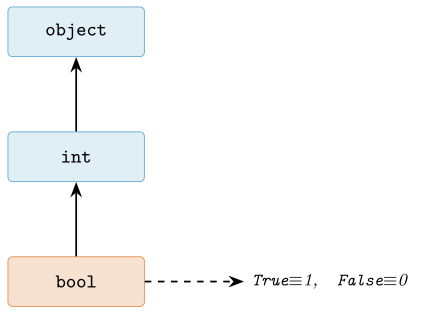
bool. Cadena de herencia de bool. Al descender de int, cada valor booleano es también un entero: True se comporta como 1 y False como 0 en todo contexto aritmético.Donde este patrón alcanza su máxima expresión es en la aritmética vectorizada de NumPy y pandas, que estudiaremos a fondo en el cap. 7. Una comparación elemento a elemento sobre un ndarray o una Series no devuelve un único booleano, sino un array booleano (una máscara), cuyo método .sum() explota exactamente la equivalencia True\(\,\equiv\,\)1 para contar en tiempo prácticamente constante respecto al número de elementos, sin bucle interpretado.
>>> import numpy as np
>>> serie = np.array([-3, 5, 8, -1, 0, 4])
>>> serie > 0 # mascara booleana [sintetico]
array([False, True, True, False, False, True])
>>> (serie > 0).sum() # cuenta positivos
3
>>> (serie > 0).mean() # PROPORCION de positivos
0.5El detalle de .mean() es especialmente elegante: la media aritmética de una secuencia de ceros y unos es exactamente la proporción de unos, es decir, la fracción de elementos que satisfacen el predicado. Así, (serie > 0).mean() responde “¿qué porcentaje de mis datos es positivo?” sin ninguna maquinaria adicional. Sobre esta base –que bool es int– reposan innumerables recetas de filtrado, indexación y agregación que veremos en los capítulos de NumPy (Harris et al. 2020) y pandas (McKinney 2022; VanderPlas 2023).
Tipado dinámico: la variable no declara tipo
Volvamos al modelo de nombres del §2.7.1. En Python, una variable no es una caja tipada que contiene un valor: es una etiqueta adherida a un objeto que vive en el montículo. La etiqueta no tiene tipo; el tipo pertenece al objeto. Por eso una misma variable puede reetiquetar, a lo largo de su vida, objetos de tipos completamente distintos, y el intérprete lo acepta sin protestar.
>>> x = 42 # x etiqueta un int
>>> type(x)
<class 'int'>
>>> x = "cuarenta y dos" # ahora x etiqueta un str
>>> type(x)
<class 'str'>
>>> x = [1, 2, 3] # y ahora una list
>>> type(x)
<class 'list'>Esto es el tipado dinámico: la asociación entre un nombre y un tipo se resuelve en tiempo de ejecución, en cada punto del programa, no en una declaración previa. No existe –como en C, Java o Rust– una declaración int x; que fije de antemano qué puede contener x. La flexibilidad es enorme y explica buena parte de la agilidad de Python para el prototipado y la exploración interactiva de datos (Pérez y Granger 2007). Pero conviene entender su contrapartida: como el tipo solo se conoce al ejecutar, muchos errores de tipo no se detectan hasta que la línea culpable se evalúa, quizá tras minutos de cómputo.
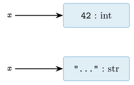
x es una etiqueta sin tipo propio; puede reasignarse a objetos de tipos distintos. El tipo reside siempre en el objeto, nunca en el nombre.Tipado fuerte: Python no adivina conversiones
Dinámico no significa permisivo. Python es, además, un lenguaje de tipado fuerte: no realiza conversiones implícitas entre tipos incompatibles para hacer que una operación “funcione a toda costa”. La distinción entre las dos dimensiones –dinámico frente a estático, fuerte frente a débil– es ortogonal, y confundirlas es un error frecuente.
>>> "3" + 5
Traceback (most recent call last):
...
TypeError: can only concatenate str (not "int") to str
>>> "3" * 3 # esto SI es valido: repeticion de cadena
'333'
>>> int("3") + 5 # conversion EXPLICITA
8En un lenguaje de tipado débil como JavaScript, "3" + 5 produciría silenciosamente la cadena "35", coaccionando el número a texto. Python se niega: "3" es un str y 5 es un int, no existe una suma definida entre ambos, y el intérprete lanza un TypeError en lugar de inventar un resultado. El programador debe expresar su intención de forma explícita con int("3") o str(5). Esta firmeza es una virtud: erradica toda una clase de errores silenciosos en los que un dato mal tipado se propaga por el programa disfrazado de otra cosa. La filosofía subyacente está condensada en el aforismo “explicit is better than implicit” del Zen de Python (Peters 2004).
| Dimensión | Extremos | Python |
|---|---|---|
| ¿Cuándo se conoce el tipo? | estático / dinámico | dinámico |
| ¿Se coaccionan tipos incompatibles? | débil / fuerte | fuerte |
La combinación dinámico + fuerte define el carácter de Python: flexible en cuándo decide los tipos, pero riguroso en respetar la identidad de cada objeto una vez decidido.
type frente a isinstance: la herencia importa
Puesto que el tipo vive en el objeto, con frecuencia necesitaremos consultarlo en tiempo de ejecución. Python ofrece dos herramientas para ello, y la elección entre ambas no es indiferente. La función type(obj) devuelve el tipo exacto del objeto; isinstance(obj, T) pregunta si el objeto es una instancia de T o de cualquiera de sus subclases. La diferencia se aprecia justamente con nuestro bool.
>>> type(True) is int
False
>>> type(True) is bool
True
>>> isinstance(True, int) # True ES un int, por herencia
True
>>> isinstance(True, (int, float)) # acepta una tupla de tipos
TrueSi escribiéramos una comprobación con type(x) is int para decidir si x es un entero, un valor True fallaría la prueba, a pesar de ser aritméticamente un entero perfectamente válido. Este es un fallo real y difícil de rastrear. La regla práctica es contundente: salvo que se necesite el tipo exacto por una razón muy específica, prefiérase siempre isinstance, porque respeta la relación de herencia y hace que el código funcione con subclases que el autor original quizá ni imaginaba. Comparar tipos con type(x) == C es, además, doblemente frágil: rompe la sustituibilidad y usa igualdad donde correspondería identidad. Tanto (Rossum et al. 2001) como Ramalho (2022) desaconsejan explícitamente las comprobaciones basadas en type.
Duck typing: importa el comportamiento, no la clase
Hay, sin embargo, una tradición aún más profunda en Python que relativiza incluso el uso de isinstance: el duck typing. Su nombre proviene del adagio “si camina como un pato y grazna como un pato, es un pato”. Trasladado a la programación: para operar sobre un objeto no importa a qué clase pertenece, sino qué métodos y comportamientos ofrece. Si un objeto implementa el protocolo que necesitamos, sirve; su linaje es irrelevante.
def total_caracteres(coleccion):
# No preguntamos DE QUE TIPO es 'coleccion'.
# Solo exigimos que sea iterable y que sus
# elementos respondan a len().
return sum(len(elem) for elem in coleccion)
>>> total_caracteres(["hola", "mundo"]) # lista de str
9
>>> total_caracteres(("ab", "cde", "f")) # tupla de str
6
>>> total_caracteres({"xy", "zwv"}) # conjunto de str
5La función total_caracteres no comprueba tipos en ningún momento: acepta cualquier iterable cuyos elementos admitan len. Funciona con listas, tuplas, conjuntos, generadores y con tipos que ni siquiera existían cuando se escribió, siempre que “grazen” del modo esperado. Esta orientación al protocolo –al conjunto de métodos que un objeto soporta– en lugar de a la clase concreta es una de las ideas vertebradoras del lenguaje. En Python moderno, muchos de estos protocolos se materializan en los métodos especiales (o dunder methods, como __len__, __iter__, __getitem__) que estudiaremos en el cap. 6, y en las clases base abstractas y protocolos formales que retomaremos en el cap. 14. El propio modelo de datos de Python (Python Software Foundation, s. f.) está diseñado alrededor de estos protocolos, y Ramalho (2022) organiza buena parte de su exposición en torno a ellos.
Anotaciones de tipo: un puente hacia el tipado estático
El tipado dinámico brilla en la exploración interactiva, pero en bases de código grandes y colaborativas su falta de garantías previas se vuelve un lastre: los errores de tipo aparecen tarde y la intención del autor queda implícita. Como respuesta, Python incorporó desde la versión 3.5 las anotaciones de tipo opcionales, especificadas en (Rossum et al. 2014). Son sugerencias (type hints) que documentan qué tipos espera y devuelve una función, sin alterar en absoluto la semántica de ejecución: el intérprete las ignora en tiempo de ejecución; son herramientas externas –como mypy o pyright– las que las verifican estáticamente antes de ejecutar.
def positivos(datos: list[float]) -> int:
"""Cuenta cuantos elementos de 'datos' son positivos."""
return sum(x > 0 for x in datos) # bool -> int, como vimos
>>> positivos([-3.0, 5.0, 8.0, -1.0])
2La firma positivos(datos: list[float]) -> int declara que la función recibe una lista de flotantes y devuelve un entero. Nada impide, en tiempo de ejecución, pasarle una lista de cadenas; pero un verificador estático lo señalará como error antes de ejecutar, y cualquier persona que lea la firma comprende de inmediato el contrato de la función. Las anotaciones no contradicen el tipado dinámico ni el duck typing: los complementan, ofreciendo un puente gradual y opcional hacia las garantías del tipado estático. Este es un tema central del cap. 3, donde formalizaremos la sintaxis de anotaciones, los tipos genéricos y los protocolos estructurales que reconcilian, por fin, la flexibilidad del pato con el rigor del compilador.
Cadenas de texto y Unicode
De todos los tipos incorporados de Python, ninguno acumula tanta confusión —ni provoca tantos fallos silenciosos en producción— como str. La razón es que el texto parece simple: leemos una palabra y creemos ver una secuencia de letras. Bajo esa superficie, sin embargo, se esconde un modelo de datos preciso que conviene entender antes de manipular un solo corpus, porque en ciencia de datos el texto llega de todas partes —formularios web, redes sociales, PDF escaneados, nombres de personas en decenas de idiomas— y casi nunca es ASCII limpio. Un pipeline que funciona con datos de prueba en inglés y revienta con el primer nombre acentuado no es una anécdota: es el modo de fallo más común al portar código de una máquina a otra.
En Python 3, una cadena str es una secuencia inmutable de caracteres Unicode. Cada elemento de esa secuencia no es un byte ni un carácter «tipográfico», sino un punto de código (code point): un número entero, definido por el estándar Unicode, que identifica una entidad abstracta como letra e minúscula con acento agudo (U+00E9) o cara sonriente (U+1F600). El estándar reserva un espacio de más de un millón de posiciones y asigna a cada una un significado estable (The Unicode Consortium 2022). Comprender que str habla el idioma de los puntos de código —y no el de los bytes— es la clave que desactiva la mayoría de los errores de texto que veremos.
Puntos de código, no bytes: qué cuenta len
La primera consecuencia práctica del modelo es que len sobre una str cuenta puntos de código, no bytes ocupados en memoria ni en disco. Esto es exactamente lo que queremos al analizar texto: si un usuario escribe la palabra «Ñandú», su longitud lógica es cinco, independientemente de cómo se almacene.
s = "Nandu" # (en el codigo usamos ASCII; el texto real seria "Nandu")
len(s) # 5 -> cinco puntos de codigo (caracteres)
s[0] # 'N' -> indexar devuelve un punto de codigo
ord(s[0]) # 209 -> el entero Unicode de 'N' (U+00D1)
chr(241) # 'n' -> operacion inversa: entero -> caracter
[c for c in s] # es una secuencia de puntos de codigoQue str sea inmutable significa lo mismo aquí que para int o tuple (véase el modelo de objetos presentado al inicio de este capítulo): no se puede modificar en el sitio. Una operación como s.upper() o s.replace(...) no altera s; construye y devuelve una cadena nueva. Esta inmutabilidad tiene un precio —concatenar en un bucle con + crea un objeto nuevo en cada paso, de coste cuadrático— y por eso el idioma correcto para ensamblar texto es acumular fragmentos en una lista y unirlos una sola vez con "".join(...). La contrapartida es enorme: al no poder mutar, las cadenas son hashables y pueden usarse como claves de diccionario o elementos de conjunto, algo esencial para contar frecuencias de palabras o deduplicar registros (Ramalho 2022).
Codificar y descodificar: str frente a bytes
Los puntos de código son una abstracción; viven en la memoria del intérprete. Pero un fichero, un socket de red o una respuesta HTTP no transportan puntos de código: transportan bytes. El puente entre ambos mundos es la codificación de caracteres, y en Python se materializa en dos métodos inversos y en dos tipos distintos que no deben confundirse jamás:
str\(\rightarrow\)bytesmediantes.encode(codec): convierte la secuencia de puntos de código en una secuencia de bytes.bytes\(\rightarrow\)strmedianteb.decode(codec): interpreta bytes bajo un códec para reconstruir los puntos de código.
Aquí aparece el resultado que más sorprende a quien empieza: para texto no ASCII, len(s) y len(s.encode("utf-8")) no coinciden.
s = "cafe" # el texto real lleva 'e' acentuada al final
len(s) # 4 -> cuatro puntos de codigo
b = s.encode("utf-8") # b'caf\xc3\xa9'
len(b) # 5 -> cinco bytes: la 'e' acentuada ocupa dos
type(s), type(b) # (<class 'str'>, <class 'bytes'>)
# str y bytes son tipos DISTINTOS: no se pueden mezclar
s + b # TypeError: can only concatenate str (not "bytes")
b.decode("utf-8") == s # True -> el viaje de ida y vuelta es fielLas letras ASCII (c, a, f) ocupan un byte cada una; la é (U+00E9) ocupa dos bytes en UTF-8. Esta es la diferencia entre la longitud lógica de un texto y su tamaño en almacenamiento, y tenerla clara evita cortar cadenas por posiciones de byte —lo que parte caracteres por la mitad y produce basura. La distinción rígida entre str (texto) y bytes (datos binarios) fue una de las rupturas deliberadas de Python 3 respecto de Python 2, precisamente para forzar al programador a decidir cuándo codifica y con qué códec, en lugar de dejar que el sistema adivine (Ramalho 2022).
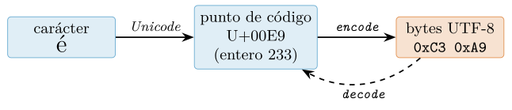
encode desciende de puntos de código a bytes; decode hace el camino inverso. Confundir estos niveles es la causa raíz de la mayoría de los fallos de texto.UTF-8, UTF-16 y por qué UTF-8 gana
Un mismo punto de código puede convertirse en bytes de varias maneras; cada receta es una codificación. Las dos más citadas son UTF-8 y UTF-16, y sus diferencias explican por qué la comunidad de datos ha convergido casi universalmente en la primera.
UTF-8 es de ancho variable: usa un byte para el ASCII (U+0000–U+007F), dos para la mayoría de los alfabetos latinos con acentos y el griego o el cirílico, tres para casi todos los ideogramas y cuatro para los emoji y planos suplementarios. Su virtud decisiva es que es un superconjunto de ASCII: cualquier fichero ASCII de siempre ya es UTF-8 válido, lo que garantiza compatibilidad hacia atrás. Además es autosincronizante (se puede reencontrar el inicio de un carácter tras un byte perdido) y no tiene problemas de orden de bytes.
UTF-16 usa dos o cuatro bytes por carácter, nunca uno. Para texto predominantemente ASCII desperdicia espacio, introduce un byte de orden (BOM) y, al no ser superconjunto de ASCII, rompe herramientas que asumen compatibilidad. La tabla 2.8 lo hace tangible.
| Texto | Puntos de código | Bytes UTF-8 | Bytes UTF-16 |
|---|---|---|---|
"data" |
4 | 4 | 10 |
"Ñandú" |
5 | 7 | 12 |
emoji U+1F600 |
1 | 4 | 6 |
La recomendación operativa es simple y casi sin excepciones: lee y escribe siempre en UTF-8 y decláralo explícitamente. En Python nunca conviene depender de la codificación por defecto de la plataforma, que en algunos sistemas Windows todavía es una página de códigos heredada. El tratamiento sistemático de la codificación al abrir ficheros —open(ruta, encoding="utf-8")— se desarrolla en el capítulo de entrada/salida y formatos (cap. 5); aquí basta con interiorizar la regla.
Mojibake: el fallo de portabilidad más común
Cuando un texto se codifica con un códec y luego se descodifica con otro distinto, los bytes se reinterpretan mal y aparece el mojibake: esa cadena de símbolos ilegibles (é donde debía haber una é) que todo el mundo ha visto alguna vez. No es un error del azar: es el resultado determinista de un desajuste de códecs, y es el fallo de portabilidad número uno al mover datos entre máquinas, sistemas operativos y bases de datos (Spolsky 2003).
s = "cafe" # el texto real lleva 'e' acentuada
crudos = s.encode("utf-8") # b'caf\xc3\xa9' (bytes correctos)
# Descodificar con el codec EQUIVOCADO: no falla, pero corrompe
crudos.decode("latin-1") # 'cafA' + basura: mojibake silencioso
# Peor aun: bytes que ni siquiera forman texto valido bajo el codec
b"\xff\xfe".decode("utf-8") # UnicodeDecodeError
# La unica defensa robusta: ser explicito y no tragarse el error
crudos.decode("utf-8", errors="strict") # texto correcto (por defecto)La lección práctica es doble. Primero, errors="strict" (el valor por defecto) es una virtud: prefiere una excepción ruidosa a una corrupción silenciosa. Segundo, el mojibake casi nunca es un problema del texto, sino de metadatos perdidos: alguien codificó en UTF-8 y otro descodificó suponiendo Latin-1. La disciplina de anotar y respetar la codificación de cada fuente es tan importante como el propio análisis (Spolsky 2003).
Normalización: por qué «café» puede no ser igual a «café»
Unicode ofrece, para ciertos caracteres, más de una manera de representar la misma apariencia. La palabra «café» puede escribirse con la é como un único punto de código precompuesto (U+00E9) o como la letra e seguida de un acento agudo combinante (U+0065 U+0301). Ambas se ven idénticas en pantalla, pero son secuencias de puntos de código distintas y, por tanto, no son iguales para el operador == ni producen el mismo hash.
import unicodedata
a = "cafeé" # 'e' acentuada precompuesta (1 code point) -> "cafe" + e-aguda
b = "cafe\u0301" # 'e' + acento combinante (2 code points)
a == b # False <- mismo aspecto, distinto contenido
len(a), len(b) # (4, 5)
# Normalizar a una forma canonica comun resuelve la comparacion
c = unicodedata.normalize("NFC", b) # forma compuesta
d = unicodedata.normalize("NFD", a) # forma descompuesta
a == c # True
len(unicodedata.normalize("NFC", b)) # 4El estándar define varias formas de normalización (The Unicode Consortium 2022). Las dos esenciales son NFC (Normalization Form Canonical Composition), que combina los caracteres en su forma precompuesta más compacta, y NFD (Canonical Decomposition), que los separa en base más marcas combinantes. La regla de higiene de datos es contundente: normaliza todo el texto a NFC en la frontera de entrada, antes de comparar, deduplicar, agrupar o usar como clave. Omitir este paso genera bugs traicioneros —dos filas que «son el mismo cliente» pero no se agrupan, o una búsqueda que no encuentra un término que sí está— especialmente frecuentes cuando el texto procede de macOS (que tiende a NFD) y se compara con texto de otras fuentes (que tienden a NFC).
Grafemas frente a puntos de código: el caso de los emoji
Queda un último nivel de sutileza. Lo que una persona percibe como «un carácter» —un clúster de grafema— puede corresponder a varios puntos de código. El ejemplo canónico es el emoji de familia, construido uniendo varios emoji con caracteres de unión invisibles (ZWJ, U+200D). Para el usuario es un solo símbolo; para len son muchos puntos de código.
familia = "\U0001F468\u200d\U0001F469\u200d\U0001F467" # se ve como UN emoji de familia
len(familia) # 5 -> tres emoji + dos uniones ZWJ
len(familia.encode("utf-8")) # 18 -> y bastantes bytes
bandera = "\U0001F1EA\U0001F1F8" # UNA bandera visible (ES)
len(bandera) # 2 -> dos "simbolos indicadores regionales"La moraleja es que len(s) mide puntos de código, que no siempre equivalen a «caracteres percibidos». Para segmentar texto por grafemas —contar correctamente los caracteres de un tuit, o truncar sin partir un emoji— hace falta la lógica de segmentación del propio estándar Unicode (The Unicode Consortium 2022), disponible en bibliotecas de terceros. En la inmensa mayoría del trabajo de datos basta con puntos de código; pero conviene saber que existe este tercer nivel, no vaya a ser que un recuento «de caracteres» sobre emoji devuelva números desconcertantes.
Con estas piezas —punto de código frente a byte, codificación explícita en UTF-8, defensa activa contra el mojibake y normalización a NFC en la entrada— el texto deja de ser una fuente de fallos misteriosos y pasa a ser un tipo de dato tan predecible como cualquier otro. El detalle de cómo aplicar estas reglas al leer y escribir ficheros reales se retoma en el cap. 5.
Métodos de cadena y formateo de texto
Buena parte del trabajo de un científico de datos ocurre antes del primer modelo y después del último cálculo, y en ambos extremos el material es texto. Antes, porque los datos llegan sucios: espacios sobrantes, mayúsculas inconsistentes, separadores heterogéneos, códigos con prefijos que no importan. Después, porque un número crudo como \(0{,}9237451\) no es un resultado presentable: hay que convertirlo en 92``,``4 % o en 0``,``92 según a quién se le muestre. Esta sección cubre las dos caras de esa moneda: los métodos del tipo str para limpiar y normalizar texto, y la maquinaria de formateo —con las f-strings como forma idiomática moderna— para convertir valores en cadenas legibles sin teclear las cifras a mano. Esto último no es cosmética: enlaza directamente con la política de cifras del libro (cap. 10), donde la regla es que ningún número se escribe a mano si puede calcularse y formatearse.
El tipo str es inmutable
En el modelo de datos de Python (Python Software Foundation, s. f.), una cadena es una secuencia inmutable de puntos de código Unicode. Inmutable significa que un objeto str, una vez creado, no puede modificarse: no existe operación que cambie una cadena «en su sitio». Esta propiedad tiene una consecuencia práctica que domina todo lo que sigue: cada método de str que parece «transformar» la cadena en realidad devuelve una cadena nueva y deja intacta la original. No hay excepciones. De ahí una confusión habitual: llamar a un método y esperar que el efecto quede grabado en la variable.
nombre = " Ada Lovelace "
nombre.strip() # devuelve "Ada Lovelace"...
print(repr(nombre)) # ...pero 'nombre' NO cambio:
# ' Ada Lovelace '
# forma correcta: reasignar el resultado
nombre = nombre.strip()
print(repr(nombre)) # 'Ada Lovelace'La inmutabilidad no es un capricho del diseño. Permite que las cadenas sean hashables —y por tanto usables como claves de diccionario o elementos de conjunto—, habilita optimizaciones internas del intérprete como la reutilización de literales cortos (interning) y garantiza que pasar una cadena a una función nunca la altere por sorpresa. Desde Python 3.3 la representación interna es además compacta: cada cadena elige, según su contenido, entre uno, dos o cuatro bytes por carácter, de modo que un texto puramente latino no paga el coste de almacenar puntos de código altos (Löwis 2010). El precio a cambiar es que toda «modificación» crea un objeto nuevo; cuando eso ocurre en un bucle sobre millones de filas, importa, y volveremos a ello en la caja avanzada.
Métodos de limpieza y normalización
El repertorio de métodos de str es amplio, pero para higiene de datos textuales basta con dominar un núcleo pequeño. Todos comparten la misma firma de comportamiento —reciben la cadena por self, devuelven una nueva— y todos se encadenan con naturalidad porque la salida de uno es una cadena sobre la que llamar al siguiente.
.strip()elimina espacios en blanco (y saltos de línea, tabuladores) al principio y al final. Con un argumento,.strip("#"), elimina esos caracteres concretos. Existen las variantes.lstrip()y.rstrip()para un solo extremo..lower()y.upper()normalizan el uso de mayúsculas, imprescindible antes de comparar o agrupar etiquetas que un humano tecleó de forma inconsistente..replace(viejo, nuevo)sustituye todas las apariciones de una subcadena por otra. Es la herramienta para uniformar separadores o borrar prefijos fijos..split(sep)parte la cadena en una lista de trozos usandosepcomo delimitador; sin argumento, parte por cualquier bloque de espacios en blanco y descarta los vacíos..startswith(pref)(y su gemela.endswith) devuelve un booleano: útil para filtrar o para decidir ramas sin construir cadenas nuevas.sep.join(iterable)es la operación inversa de.split: pega los elementos de un iterable de cadenas intercalandosep. Nótese que se invoca sobre el separador, no sobre la lista.
El siguiente listado ilustra un flujo de limpieza realista —normalizar una etiqueta categórica que llega de un formulario— y muestra el encadenamiento, que es la forma idiomática de aplicar varias transformaciones seguidas.
crudo = " Pais: ESPANA ;Espana; espana "
# encadenamiento: cada metodo opera sobre la cadena que devolvio el anterior
limpio = crudo.strip().lower().replace("pais:", "").strip()
print(repr(limpio)) # 'espana ;espana; espana'
# split + comprension + join para normalizar una lista de valores
partes = [p.strip() for p in limpio.split(";")]
print(partes) # ['espana', 'espana', 'espana']
# filtrado con startswith (no construye cadenas nuevas: solo decide)
codigos = ["ES-01", "ES-02", "FR-07", "ES-11"]
espanoles = [c for c in codigos if c.startswith("ES-")]
print(", ".join(espanoles)) # 'ES-01, ES-02, ES-11'Dos advertencias didácticas. La primera: .replace no entiende de palabras, solo de subcadenas, así que "casada".replace("casa", "hogar") produce "hogarda"; cuando la sustitución debe respetar límites de palabra o patrones, el trabajo pertenece a las expresiones regulares del módulo re, que veremos más adelante. La segunda: .lower() realiza un plegado de mayúsculas sencillo; para comparaciones robustas entre idiomas conviene .casefold(), que es más agresivo (por ejemplo, colapsa la «ß» alemana). La razón de fondo es que «texto» no es «bytes»: un carácter puede ocupar varios bytes y la equivalencia entre grafías no es trivial (Spolsky 2003). El libro trata Unicode y codificaciones con detalle en su momento; aquí basta con la disciplina de normalizar siempre antes de comparar.
| Método | Devuelve | Efecto |
|---|---|---|
.strip() |
str |
quita blancos (o caracteres dados) de los extremos |
.lower() |
str |
pasa a minúsculas |
.replace(a, b) |
str |
sustituye todas las apariciones de a por b |
.split(sep) |
list |
parte en trozos por el delimitador |
.startswith(p) |
bool |
indica si empieza por el prefijo p |
sep.join(it) |
str |
une los elementos intercalando sep |
Formateo moderno: las f-strings
Producir texto a partir de valores es la otra mitad del trabajo. Python ha acumulado tres mecanismos, y conviene conocer los tres aunque solo uno sea hoy recomendable. El más antiguo es el %-formato, heredado del printf de C: "acierto: %.2f" % x. Funciona, pero es frágil (confunde tuplas con argumentos únicos) y hoy se considera legado. Después llegó str.format —propuesto en la PEP 3101 (2006) e incorporado al lenguaje con Python 2.6 y 3.0—, más potente y explícito, que introdujo la mini-sintaxis de formato que sigue vigente (Talin 2006): "acierto: {:.2f}".format(x). Y en Python 3.6, las cadenas literales formateadas o f-strings (Smith 2015) convirtieron el formateo en algo directo y legible, poniendo la expresión dentro de la propia cadena.
Una f-string es una cadena precedida de f en la que cualquier cosa entre llaves { } se evalúa como expresión Python y se inserta en el resultado. La ganancia principal es de legibilidad: el valor aparece exactamente donde se leerá, sin desplazarlo a un .format al final ni contar posiciones.
acierto = 0.9237451
n = 1500
# %-formato (legado): fragil y desacoplado
print("acierto: %.2f" % acierto)
# str.format (PEP 3101): explicito, aun util en plantillas
print("acierto: {:.2f} sobre {} casos".format(acierto, n))
# f-string (PEP 498): idiomatico
print(f"acierto: {acierto:.2f} sobre {n} casos")
# acierto: 0.92 sobre 1500 casosLas f-strings admiten cualquier expresión, no solo nombres: f"{n / 2}", f"{nombre.upper()}" o incluso llamadas a métodos de limpieza como los de la subsección anterior. Desde Python 3.8 existe un atajo de depuración muy usado en cuadernos: añadir un = al final de la expresión imprime la expresión y su valor, lo que ahorra teclear el nombre dos veces.
x = 0.9237451
print(f"{x=}") # x=0.9237451
print(f"{x = :.3f}") # x = 0.924 (con formato tras ':')La mini-sintaxis de formato tras :
Lo que hace del formateo una herramienta profesional no son las llaves, sino la especificación de formato que va tras los dos puntos: {valor:spec}. Esa spec es un pequeño lenguaje —compartido por str.format y las f-strings— que controla precisión, signo, separadores de millares, anchura y alineación (Talin 2006). Dominarla es lo que permite cumplir la regla del capítulo 10: presentar cifras sin teclearlas, dejando que el formato haga el redondeo y la puntuación.
La estructura general de la especificación es [relleno][alineación][signo][#][0]``[ancho][,_][.precisión][tipo]. No hace falta memorizarla entera; conviene manejar con soltura un puñado de casos que cubren casi todo el trabajo de presentación de datos, resumidos en la tabla 2.10.
| Spec | Resultado | Significado |
|---|---|---|
{v:.2f} |
0.92 |
decimal fijo, 2 cifras |
{v:.1%} |
92.4% |
porcentaje (multiplica \(\times100\)) |
{v:.3e} |
9.237e-01 |
notación científica |
{1234567:,} |
1,234,567 |
separador de millares |
{1234.5:,.2f} |
1,234.50 |
millares + 2 decimales |
{42:>10} |
42 |
alinear a la derecha en ancho 10 |
{42:<10} |
42 |
alinear a la izquierda |
{42:^10} |
42 |
centrar en ancho 10 |
{-3:=+6} |
- 3 |
signo pegado, relleno tras el signo |
Los tres casos más rentables para ciencia de datos merecen comentario. El especificador .Nf fija N decimales y redondea —no trunca—, lo cual conecta con las limitaciones de la coma flotante que se estudian en su sección: mostrar dos decimales de un float es una decisión de presentación, no una corrección del valor almacenado (Goldberg 1991). El especificador .N% multiplica por cien y añade el símbolo, de modo que un acierto guardado como proporción se muestra como porcentaje sin aritmética manual; esto evita el error clásico de escribir «92%» y descubrir después que el valor real era \(0{,}923\). Y la coma , inserta separadores de millares, lo que transforma 1234567 en algo que un lector humano procesa de un vistazo.
acierto = 0.9237451
n_muestra = 1_500_000
error_med = 0.03812
# porcentaje con un decimal: idioma directo para reportar metricas
print(f"Acierto: {acierto:.1%}") # Acierto: 92.4%
# millares para tamanos de muestra
print(f"n = {n_muestra:,} filas") # n = 1,500,000 filas
# alineacion en columnas de ancho fijo (informe de texto plano)
for nom, val in [("acierto", acierto), ("error", error_med)]:
print(f"{nom:<10}{val:>8.3f}")
# acierto 0.924
# error 0.038La alineación con >, < y ^ (derecha, izquierda, centro) sobre un ancho fijo es lo que produce tablas de texto plano legibles en la consola o en un log, sin depender de bibliotecas externas. El especificador =, menos frecuente, coloca el relleno entre el signo y las cifras —útil para columnas contables donde los signos deben quedar alineados a la izquierda y los dígitos a la derecha—.
En conjunto, los métodos de str y la mini-sintaxis de formato forman el puente entre los datos crudos y los resultados presentables. La limpieza normaliza la entrada; el formateo disciplina la salida. Ambos descansan sobre la misma propiedad del modelo de datos —la inmutabilidad de las cadenas— y ambos sirven a la misma disciplina metodológica: no manipular texto a ojo ni teclear cifras a mano, sino dejar que el código produzca, de forma reproducible, tanto los valores como su presentación (cap. 10).
None, veracidad y comparaciones
Todo lenguaje que aspire a manejar datos del mundo real necesita un modo de expresar la ausencia de valor: la casilla de un formulario que nadie rellenó, el resultado de una función que no encontró nada, el estado inicial de una variable que todavía no significa nada. En Python ese papel lo desempeña None. A su alrededor gravita un conjunto de reglas —la veracidad (truthiness) de los objetos y el comportamiento de los operadores lógicos— que, bien comprendidas, producen código idiomático y conciso, y mal comprendidas producen errores silenciosos especialmente peligrosos en ciencia de datos, donde un cero legítimo o una cadena vacía intencionada pueden borrarse por accidente. Esta sección desmonta esas reglas desde su fundamento en el modelo de datos y las conecta con el problema práctico del relleno de datos ausentes que se aborda en el cap. 10.
None: el objeto único de la ausencia
None es el único valor del tipo NoneType. No es un keyword mágico ni una constante flotante en el vacío: es un objeto ordinario, con identidad, tipo y referencias, que el intérprete crea una sola vez al arrancar y reutiliza durante toda la vida del programa. Decimos por eso que es un singleton: no existen dos None distintos, solo hay uno, y cada aparición de la palabra None en el código es una referencia a ese mismo y único objeto (Python Software Foundation, s. f.).
>>> type(None)
<class 'NoneType'>
>>> None is None
True
>>> a = None
>>> b = None
>>> a is b # ambos apuntan al MISMO objeto
True
>>> id(a) == id(b) # misma direccion en memoria
TrueQue None sea un singleton no es un detalle de implementación anecdótico: es la razón por la que se compara con is y no con ==. El operador is pregunta por identidad (¿son el mismo objeto?), mientras que == pregunta por igualdad de valor y delega en el método __eq__ del operando de la izquierda. Como None es único, la pregunta correcta siempre es de identidad: no hay ningún otro objeto que sea None, solo el propio None. La forma canónica, recomendada explícitamente por la guía de estilo (Rossum et al. 2001), es por tanto:
if x is None: # correcto e idiomatico
...
if x is not None: # negacion idiomatica
...Escribir if x == None funciona en el caso trivial, pero es frágil y semánticamente incorrecto. Un objeto puede redefinir __eq__ para devolver True al compararse con None —o para lanzar una excepción, o para producir un resultado ambiguo—. Los arrays de NumPy y las series de pandas son el caso paradigmático en ciencia de datos: su == está sobrecargado para operar elemento a elemento y devuelve un array booleano, no un único True/False, de modo que arr == None no da la respuesta que un principiante esperaría (Harris et al. 2020). La comparación por identidad, en cambio, es inmune a toda sobrecarga: is está implementado por el propio intérprete comparando referencias y ningún tipo de usuario puede alterarlo.
>>> import numpy as np
>>> arr = np.array([1.0, np.nan, 3.0])
>>> arr == None # NO es lo que se espera
array([False, False, False])
>>> arr is None # identidad: inequivoco
FalseAdemás de comunicar ausencia, None cumple tres funciones idiomáticas que conviene distinguir. Primero, es el valor de retorno por defecto: una función que termina sin ejecutar un return explícito —o que ejecuta un return pelado— devuelve None. Métodos que mutan en el sitio, como list.sort() o list.append(), devuelven None deliberadamente para señalar que actúan por efecto secundario y no producen un objeto nuevo; de ahí el clásico error ordenada = mi_lista.sort(), que deja ordenada valiendo None. Segundo, es el centinela idiomático para argumentos por omisión mutables, un patrón que estudiaremos en detalle en el cap. 7 pero cuyo esqueleto conviene fijar ya:
def agrega(elemento, destino=None):
if destino is None: # centinela: crea uno NUEVO por llamada
destino = []
destino.append(elemento)
return destinoSe usa None como valor por defecto —y no destino=[]— porque el valor por defecto se evalúa una sola vez, al definir la función, y una lista compartida entre llamadas produciría el temido default mutable. Tercero, None sirve como marcador de ausencia frente a un valor “vacío pero presente”: en un conjunto de datos, distinguir None (no se midió) de 0 (se midió y salió cero) o de "" (el campo está vacío a propósito) es una distinción semántica de primer orden que la veracidad, como veremos, tiende a aplanar peligrosamente.
Reglas de veracidad (truthiness)
Cualquier objeto de Python puede evaluarse en un contexto booleano —la condición de un if, de un while, el operando de and/or/not— sin necesidad de que sea literalmente True o False. El intérprete determina su valor de verdad preguntándole al objeto, en este orden: si define __bool__, usa su resultado; si no, si define __len__, el objeto es falso cuando su longitud es cero y verdadero en otro caso; y si no define ninguno de los dos, el objeto se considera verdadero (Python Software Foundation, s. f.; Ramalho 2022). Este mecanismo de protocolo —consultar métodos especiales antes que aplicar reglas rígidas— es el corazón del modelo de datos que este capítulo desarrolla, y la veracidad es una de sus manifestaciones más visibles.
La consecuencia práctica es un conjunto pequeño y memorizable de valores falsos (falsy). Todo lo demás es verdadero (truthy). La tabla 2.11 los reúne.
| Categoría | Valor falso | Motivo |
|---|---|---|
| Ausencia | None |
singleton de NoneType |
| Booleano | False |
es 0 en el fondo |
| Enteros | 0 |
cero numérico |
| Flotantes | 0.0 |
cero numérico |
| Complejos | 0j |
cero numérico |
| Cadenas | "" |
longitud cero |
| Listas | [] |
longitud cero |
| Tuplas | () |
longitud cero |
| Diccionarios | {} |
longitud cero |
| Conjuntos | set() |
longitud cero |
La regla vertebradora es sencilla: los ceros numéricos son falsos y las colecciones vacías son falsas. Esto habilita un estilo muy legible. En lugar de escribir if len(lista) == 0 o if len(lista) > 0, el código idiomático consulta directamente la veracidad de la colección, apoyándose en su __len__:
if not lista: # "si la lista esta vacia"
print("no hay datos")
if lista: # "si la lista tiene algun elemento"
procesar(lista)Este idioma es preferible porque expresa la intención —¿hay algo que procesar?— en vez del mecanismo —¿cuánto mide?—, y porque funciona uniformemente sobre cualquier objeto que respete el protocolo de longitud. Ahora bien, precisamente por ser tan cómodo, es el origen de la trampa que veremos en §2.10 sobre los valores por defecto: not x es verdadero tanto si x es None como si es 0, 0.0, "" o [], y esas situaciones no siempre significan lo mismo.
or y and no devuelven booleanos
Aquí reside una de las sutilezas más útiles —y más malinterpretadas— del modelo. Los operadores or y and de Python no devuelven True o False: devuelven uno de sus operandos, sin convertirlo. Evalúan sus argumentos de izquierda a derecha, en cortocircuito, y retornan el objeto que decide el resultado (Python Software Foundation 2026; Ramalho 2022). Las reglas exactas son:
a or bevalúaa; siaes verdadero, devuelvea(y no llega a mirarb); en caso contrario devuelveb.a and bevalúaa; siaes falso, devuelvea; en caso contrario devuelveb.
>>> 3 or 5 # 3 es verdadero -> devuelve 3
3
>>> 0 or 5 # 0 es falso -> devuelve el segundo
5
>>> "" or "def" # "" es falso -> devuelve "def"
'def'
>>> 3 and 5 # 3 es verdadero -> devuelve 5
5
>>> 0 and 5 # 0 es falso -> devuelve 0 (sin evaluar 5)
0
>>> [] and caro() # [] es falso: caro() NUNCA se llama
[]El cortocircuito no es solo una optimización: es una garantía semántica de que el segundo operando no se evalúa cuando el primero ya decide el resultado. Por eso usuario and usuario.nombre es seguro aunque usuario pueda ser None: si es None (falso), la expresión devuelve None sin tocar el atributo inexistente. La figura 2.10 resume el flujo de decisión de a or b.
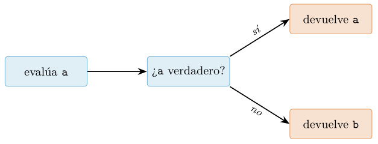
or. Flujo de evaluación de a or b: el operador devuelve el primer operando verdadero o, si ambos podrían ser falsos, el último operando evaluado. and es la imagen especular.El patrón x or defecto y su trampa
De este comportamiento nace un idioma extraordinariamente común para proporcionar valores por defecto:
nombre = entrada or "anonimo" # si entrada es falsa, usa "anonimo"
puerto = config.get("port") or 8080Es compacto y a menudo correcto. Pero encierra una trampa que en ciencia de datos causa errores insidiosos: x or defecto descarta x no cuando x es None, sino cuando x es cualquier cosa falsa. Y 0, 0.0, "", [] y False son valores perfectamente legítimos que el patrón trituraría silenciosamente.
>>> cantidad = 0
>>> cantidad or 10 # un 0 legitimo se convierte en 10!
10
>>> comentario = ""
>>> comentario or "vacio" # una cadena vacia intencionada se pierde
'vacio'
>>> descuento = 0.0
>>> descuento or 0.15 # 0% de descuento se vuelve 15%!
0.15Imagine que cantidad = 0 significa “el cliente pidió cero unidades” y que descuento = 0.0 significa “sin descuento”: el patrón or los reemplaza por valores fabricados y el error se propaga sin excepción alguna. La regla es contundente: use x or defecto solo cuando cualquier valor falso deba tratarse igual que la ausencia; en cuanto 0, "" o [] sean valores válidos y distinguibles de “no hay dato”, el patrón correcto prueba explícitamente contra None:
# INCORRECTO si 0/""/[] son valores validos:
valor = x or defecto
# CORRECTO: solo sustituye cuando de verdad NO hay dato:
valor = x if x is not None else defectoEsta distinción —“ausencia” frente a “vacío legítimo”— es exactamente la que gobierna el relleno de datos ausentes que se estudia en el cap. 10: rellenar un NaN desconocido no es lo mismo que sobrescribir un cero medido, y confundirlos con un or sesga los agregados posteriores. La expresión condicional a if condición else b, por su parte, es la herramienta idiomática cuando el criterio de sustitución debe ser preciso; combinada con is None, expresa sin ambigüedad “si no hay valor, pon el defecto”.
Comparaciones encadenadas
Python permite encadenar operadores de comparación de una forma que reproduce la notación matemática y que muchos lenguajes no ofrecen. La expresión
if 18 <= edad < 65:
print("en edad laboral")no es una comparación entre 18 <= edad (un booleano) y 65, sino que el intérprete la interpreta como (18 <= edad) and (edad < 65). Formalmente, una cadena a op1 b op2 c equivale a a op1 b and b op2 c, con la garantía adicional de que b se evalúa una sola vez y de que rige el cortocircuito: si el primer eslabón es falso, el segundo no se evalúa (Python Software Foundation 2026). Esto último importa cuando el operando central tiene efectos secundarios o es costoso de calcular.
>>> x = 42
>>> 0 < x < 100 < 1000 # 0<42 and 42<100 and 100<1000
True
>>> a = b = c = 5
>>> a == b == c # 5 == 5 == 5
True
>>> 1 < 2 > 1.5 # legal, aunque poco legible: True
TrueEl encadenamiento produce código más legible y menos propenso a errores que repetir el operando central, y es especialmente natural para expresar rangos y validaciones de dominio en el preprocesado de datos —comprobar que una edad, una probabilidad o un percentil caen dentro de límites plausibles—. Un aviso de estilo: aunque el lenguaje permite mezclar direcciones (1 < 2 > 1.5), hacerlo produce expresiones difíciles de leer; limítese a cadenas monótonas del tipo a <= b < c. Y recuerde que estas comparaciones se apoyan, de nuevo, en la veracidad de cada eslabón y en la semántica de cortocircuito de and: los tres pilares de esta sección —el singleton None, las reglas de verdad y los operadores lógicos que devuelven operandos— forman un sistema coherente que conviene manejar como una sola pieza (Ramalho 2022).
Un ejemplo integrador: identidad, mutabilidad y datos
Hasta aquí hemos diseccionado por separado las piezas del modelo de datos de Python: la distinción entre identidad, tipo y valor; la diferencia entre is y ==; la frontera entre objetos mutables e inmutables; y el contrato de hashabilidad que gobierna qué puede vivir dentro de un set o servir de clave en un dict. Estas ideas parecen abstractas mientras se estudian en aislamiento con enteros pequeños y tuplas de juguete. Sin embargo, cuando uno se sienta a limpiar un conjunto de registros reales, el modelo de objetos deja de ser filosofía y se convierte en la explicación literal de por qué el programa falla, produce duplicados fantasma o acumula estado entre llamadas sin que nadie se lo pidiera. Esta sección es un capstone: teje todo lo anterior en un único caso de datos, exhibe tres errores que aparecen a diario en el trabajo de ciencia de datos y muestra cómo una sola decisión de diseño —modelar el registro como un objeto inmutable y hashable— los disuelve a los tres. Como advierte Ramalho (2022), la mutabilidad no es un detalle de implementación sino una propiedad semántica del objeto que condiciona su comportamiento en toda estructura que lo contenga.
El escenario: deduplicar un catálogo de pistas
Partimos de un problema mínimo pero honesto. Recibimos un catálogo de pistas —sintético declarado, sin ninguna carga de disco— donde cada fila describe una pista por su artista, su título y su álbum. El catálogo llega sucio: por fusiones de catálogos, reenvíos y particiones solapadas, la misma pista aparece repetida. Nuestra tarea, aparentemente trivial, es deduplicar: quedarnos con un ejemplar de cada pista distinta y contar cuántos registros únicos hay realmente. Es la operación más común del preprocesado de datos y, precisamente por su banalidad aparente, es donde el modelo de objetos cobra su peaje.
El primer instinto de casi todo principiante es representar cada registro con una list y agruparlos usando un dict o un set. Ese instinto choca de frente con el contrato de hashabilidad. El Listado 2.1 reproduce el error tal como ocurre.
# [sintetico] cada fila: [artista, titulo, album]
filas = [
["Radiohead", "Creep", "Pablo Honey"],
["Aphex Twin", "Xtal", "SAW 85-92"],
["Radiohead", "Creep", "Pablo Honey"], # duplicado exacto
]
vistos = {}
for fila in filas:
vistos[fila] = vistos.get(fila, 0) + 1 # TypeError
# TypeError: unhashable type: 'list'El intérprete no es caprichoso. Una list es mutable, y un objeto mutable no puede ser hashable porque su valor —y por tanto su hash— podría cambiar mientras vive dentro de la tabla, corrompiendo la invariante que hace que un dict localice sus claves en tiempo constante. Python lo prohíbe de raíz: la clase list deja __hash__ en None, y cualquier intento de calcular su hash aborta con TypeError. Este es exactamente el contrato descrito en el modelo de datos del lenguaje (Python Software Foundation, s. f.): un objeto es hashable si su hash no cambia durante su vida y si es comparable con otros mediante ==; los objetos inmutables lo cumplen por construcción, los mutables no.
Primer parche ingenuo y la trampa de la identidad
El siguiente reflejo es convertir cada lista en una tuple, que sí es inmutable y hashable, y usar un set para deduplicar. Funciona, pero el remedio esconde una segunda enseñanza sobre la diferencia entre identidad e igualdad, que conviene hacer explícita antes de seguir. Consideremos qué distingue realmente a dos registros «iguales».
a = ("Radiohead", "Creep", "Pablo Honey")
b = ("Radiohead", "Creep", "Pablo Honey")
print(a is b) # False -> objetos distintos en memoria
print(a == b) # True -> mismo valor
print(hash(a) == hash(b)) # True -> igualdad implica igual hashAquí reside la clave conceptual de toda la sección. Un set y un dict no deduplican por identidad (is, es decir, por ser el mismo objeto en memoria), sino por el par (hash, ==): dos elementos se consideran el mismo si tienen igual hash y resultan iguales bajo ==. Que a is b sea False es irrelevante para la deduplicación; lo que importa es que a == b sea True y que ambos hashen igual. Un principiante que intente deduplicar comparando objetos con is —o, peor, confiando en el small integer caching o el string interning que ocasionalmente hacen coincidir la identidad— construye un filtro que funciona en el intérprete interactivo y falla en producción. El contrato correcto es el de igualdad, no el de identidad. La tabla 2.12 resume qué tipos satisfacen cada propiedad.
| Tipo | Mutable | Hashable | ¿Clave de dict? |
|---|---|---|---|
list |
sí | no | no |
dict |
sí | no | no |
set |
sí | no | no |
tuple (de hashables) |
no | sí | sí |
frozenset |
no | sí | sí |
dataclass frozen |
no | sí | sí |
Segundo bug: el argumento mutable por defecto
Antes de llegar a la solución definitiva conviene exhibir un segundo error, más insidioso porque no lanza ninguna excepción: silenciosamente devuelve resultados equivocados. Supongamos que encapsulamos la deduplicación en una función auxiliar que acumula los registros ya vistos en una lista pasada por defecto. Es un patrón que aparece con enorme frecuencia en notebooks de análisis, donde se prototipa deprisa.
def acumular(pista, memoria=[]): # trampa
if pista not in memoria:
memoria.append(pista)
return memoria
print(acumular(("Radiohead", "Creep"))) # [('Radiohead', ...)]
print(acumular(("Aphex Twin", "Xtal"))) # [('Radiohead', ...), ('Aphex Twin', ...)]
# la segunda llamada "recuerda" la primera: estado colado entre invocacionesLa causa es puro modelo de objetos. El valor por defecto [] se evalúa una sola vez, en el instante en que se ejecuta la sentencia def, no en cada llamada. Ese objeto lista se enlaza al parámetro y sobrevive a la función; como es mutable, cada append lo modifica en el sitio, y la siguiente llamada recibe la misma lista con el estado acumulado. Es el mismo fenómeno de aliasing y mutación in situ que estudiamos con las listas: un único objeto compartido por varias referencias. El idioma correcto usa un centinela inmutable y crea el contenedor dentro del cuerpo, como recomienda Slatkin (2020) entre las prácticas efectivas de Python.
def acumular(pista, memoria=None):
if memoria is None:
memoria = [] # objeto nuevo en cada llamada
if pista not in memoria:
memoria.append(pista)
return memoriaLa solución correcta: un registro inmutable y hashable
Una tupla posicional deduplica bien, pero es un registro pobre: sus campos no tienen nombre, cualquiera puede confundir el orden de artista y titulo, y nada impide que un descuido mute el contenido si en algún punto se sustituye por una lista. La herramienta idiomática en Python moderno para representar un registro de datos es un dataclass con frozen=True. Congelar la clase logra tres cosas a la vez que encajan exactamente con el modelo de este capítulo: los atributos pasan a ser de solo lectura (inmutabilidad), la clase sintetiza automáticamente __eq__ campo a campo (igualdad estructural) y, al ser inmutable e igualable, sintetiza también __hash__ (hashabilidad). El registro resultante puede entrar en un set y deduplicar por valor, que es justo lo que necesitábamos.
from dataclasses import dataclass
@dataclass(frozen=True)
class Pista:
artista: str
titulo: str
album: str
# [sintetico] catalogo con duplicados exactos declarados
crudo = [
Pista("Radiohead", "Creep", "Pablo Honey"),
Pista("Aphex Twin", "Xtal", "SAW 85-92"),
Pista("Radiohead", "Creep", "Pablo Honey"), # duplicado
Pista("Daft Punk", "Da Funk", "Homework"),
Pista("Aphex Twin", "Xtal", "SAW 85-92"), # duplicado
]
unicos = set(crudo) # deduplica por (hash, ==)
print(len(crudo), "->", len(unicos)) # 5 -> 3
# el frozen es lo que garantiza el contrato:
e = Pista("Radiohead", "Creep", "Pablo Honey")
print(hash(e) == hash(Pista("Radiohead", "Creep", "Pablo Honey"))) # True
# e.album = "otro" -> FrozenInstanceError: cannot assign to fieldObsérvese cómo el mismo mecanismo que hacía fallar el Listado 2.1 ahora trabaja a nuestro favor. El set recorre el catálogo, calcula el hash de cada Pista y solo conserva uno por cada clase de igualdad; los dos duplicados exactos colapsan sobre su primer ejemplar y el recuento pasa de cinco a tres. El resultado es determinista respecto al contenido: no hay azar, no hay lectura de disco, y el conjunto de pistas únicas no depende del orden en que apareciera cada registro (aunque el orden de iteración de un set sí sea un detalle de implementación, cosa que trataremos en el cap. 4). Si el problema tuviera un componente aleatorio —por ejemplo, un muestreo del catálogo— fijaríamos una semilla explícita con random.seed(0) para que el listado fuese reproducible; aquí no hace falta porque la deduplicación es una operación puramente conjuntista.
La figura 2.11 sintetiza el itinerario conceptual: el mismo eje mutable/inmutable explica los tres bugs y su cura común.
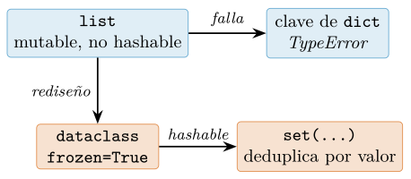
list como clave) como su arreglo (modelar el registro con un dataclass congelado que sí entra en un set).Por qué el modelo de objetos lo explica todo
Los tres errores de esta sección no son fenómenos independientes que haya que memorizar como una lista de trampas: son manifestaciones de un único principio del modelo de datos. La lista no sirve de clave porque es mutable y por tanto no hashable; el argumento por defecto acumula estado porque el objeto mutable se crea una vez y se comparte por referencia; y la deduplicación correcta funciona porque el registro congelado es inmutable, igualable por valor y en consecuencia hashable. Identidad, mutabilidad y hashabilidad son las tres coordenadas con que Python sitúa cada objeto, y comprenderlas convierte una colección de recetas dispersas en una única regla operativa: para representar un dato que se compara, agrupa o deduplica, hazlo inmutable. Este es el consejo transversal que Ramalho (2022) repite a lo largo de su tratamiento del modelo de datos, y el que sustenta buena parte del diseño idiomático en Python moderno (Slatkin 2020).
Este dataclass congelado es también una bisagra hacia lo que viene. Como estructura de datos, el registro que hemos construido y el set que lo deduplica pertenecen de lleno al catálogo de contenedores que analizaremos con detalle —coste, orden, colisiones de hash— en el cap. 4. Y como clase, la Pista es nuestro primer objeto propio con métodos sintetizados (__eq__, __hash__, __init__), un adelanto natural de la programación orientada a objetos que desarrollaremos en el cap. 6, donde veremos que definir esos métodos especiales a mano —o dejar que un dataclass los genere— es la forma en que el programador extiende el propio modelo de datos para sus tipos. El registro inmutable, en suma, no es solo la solución a un bug de deduplicación: es el punto donde el modelo de objetos del lenguaje se encuentra con el diseño de nuestras propias abstracciones de datos.
I have enough context from the detailed instructions to produce the requested LaTeX. Here it is.
Ejercicios
Los siguientes ejercicios recorren, de forma incremental, los mecanismos del modelo de datos de Python descritos en este capítulo. Salvo indicación contraria, resuélvelos abriendo un intérprete interactivo (por ejemplo IPython, (Pérez y Granger 2007)) y contrastando tu predicción con la ejecución real: la disciplina de predecir antes de ejecutar es la que consolida el modelo mental. Los marcados como (Avanzado) suponen comodidad con detalles de la implementación de CPython y no describen comportamiento garantizado por el lenguaje.
Identidad frente a igualdad. Considera el siguiente fragmento:
a = [1, 2, 3] b = [1, 2, 3] c = aPredice, antes de ejecutar, el valor de
a == b,a is b,a == cya is c. Explica con tus palabras la diferencia entre el operador==(delegado a__eq__) y el operadoris(comparación de identidad, es decir, deid(...)). Justifica por qué dos objetos distintos pueden ser iguales pero un objeto siempre es idéntico a sí mismo.Mutabilidad y aliasing. Escribe una función
anexa(lista, elemento)que uselista.append(elemento)y otraconcatena(lista, elemento)que uselista = lista + [elemento]. Aplica ambas a una misma lista externa e imprime el estado del objeto original tras cada llamada. Explica por qué una modifica el objeto llamante y la otra no, apelando a la distinción entre rebind del nombre local y mutación in situ del objeto compartido.El argumento mutable por defecto. Analiza la función:
def acumula(x, destino=[]): destino.append(x) return destinoLlama tres veces consecutivas a
acumula(1),acumula(2)yacumula(3)sin pasardestino. Predice la salida de cada llamada y explica el resultado en términos de cuándo se evalúa la expresión por defecto (una sola vez, en la definición de la función). Reescribe la función usando el idiomadestino=Nonepara eliminar el efecto sorpresa, y argumenta por qué es la forma correcta (Slatkin 2020).Caché de enteros pequeños e interning. Ejecuta y explica los resultados de:
a = 256; b = 256 c = 257; d = 257 print(a is b, c is d)Repite el experimento definiendo
cyden la misma línea y luego en líneas distintas. (Avanzado) Investiga el rango de enteros preasignados por CPython ([-5, 256]) y el interning de literales de cadena a nivel de compilación; documenta consys.internun caso en que dos cadenas construidas dinámicamente no comparten identidad hasta ser internadas. Deja claro que este comportamiento es un detalle de implementación de CPython (Shaw 2021) y no debe usarse jamás para comparar valores.Conteo de referencias. Usando
sys.getrefcount, mide el número de referencias a un objeto recién creado y explica por qué el valor es al menos uno más de lo que esperabas (el argumento pasado a la propia función cuenta). Crea y elimina alias condelobservando cómo varía la cuenta. (Avanzado) Construye una referencia circular entre dos objetos con atributos que se apunten mutuamente y razona por qué el conteo de referencias por sí solo no puede liberarlos, motivando la existencia del recolector de ciclos (Gorelick y Ozsvald 2020). Relaciónalo con las nociones de localidad de memoria de Drepper (2007).Coma flotante y representación binaria. Predice y luego verifica el valor de
0.1 + 0.2 == 0.3. Imprimeformat(0.1 + 0.2, ’.17f’)para observar el error de representación. Explica por qué0.1,0.2y0.3no admiten representación exacta en el formato binario de doble precisión (IEEE 2019; Goldberg 1991). Sustituye la comparación pormath.isclose(0.1 + 0.2, 0.3)y comenta la diferencia entre tolerancia relativa y absoluta.Caracteres frente a bytes en Unicode. Toma la cadena
s = "cañón"y calculalen(s)ylen(s.encode("utf-8")). Explica por qué difieren. Codifica la misma cadena enutf-8,utf-16ylatin-1, comparando longitudes en bytes, e intenta codificar un emoji enlatin-1para provocar y capturar la excepción correspondiente. Fundamenta la distinción entre punto de código y unidad de almacenamiento (Spolsky 2003; The Unicode Consortium 2022), y relaciona el modelo de cadenas de Python 3 con la representación flexible de (Löwis 2010).f-strings y formato. Dada una variable
pi = 3.14159265, produce con f-strings (Smith 2015): (a) el valor con cuatro decimales; (b) alineado a la derecha en un campo de ancho diez; (c) en notación científica; y (d) usando el especificador de depuraciónf"{pi=}". Reescribe al menos uno de esos formatos con el métodostr.formaty con la minilengua de formato de (Talin 2006), y comenta ventajas de legibilidad de las f-strings frente a la concatenación con+.Noney veracidad. Construye una tabla mental con los valores falsy habituales (None,0,0.0,"",[],{},set()) y verifícala conbool(...). Explica por qué se recomiendaif x is Noneen lugar deif not xcuandoxpodría ser legítimamente un contenedor vacío o el entero cero, y muestra un caso concreto en que ambas condiciones divergen. Sigue la convención de comparar conNonemediante identidad (Rossum et al. 2001).Integrador: dataclass congelada. (Avanzado) Define, con
@dataclass(frozen=True), una clasePuntocon camposxey. Comprueba que: (a) intentar reasignar un atributo lanzaFrozenInstanceError; (b) dos instancias con los mismos valores son iguales según==pero no idénticas segúnis; (c) la instancia es hashable y puede usarse como clave de diccionario o elemento de conjunto. A continuación, añade un campo con valor por defecto mutable y observa el error dedataclass: explica cómofield(default_factory=list)resuelve, a nivel de clase, el mismo problema del argumento mutable por defecto del ejercicio anterior. Contrasta la inmutabilidad estructural defrozen=Truecon la inmutabilidad profunda: demuestra que un campo que contiene una lista sigue siendo mutable en su contenido, y razona qué garantiza y qué no garantiza el congelado (Ramalho 2022).
Lecturas recomendadas
Para profundizar en los temas de este capítulo, las siguientes referencias amplían tanto la especificación del lenguaje como los detalles de implementación y los fundamentos numéricos y de codificación.
Ramalho (2022) desarrolla el modelo de datos de Python con una profundidad excepcional, incluyendo identidad frente a igualdad, mutabilidad, hashabilidad y el uso idiomático de
dataclass; es la referencia central para consolidar todo el capítulo.El Python Language Reference (Python Software Foundation 2026) y la documentación oficial del modelo de datos (Python Software Foundation, s. f.) son la fuente normativa sobre métodos especiales, semántica de identidad y protocolo de objetos; conviene acudir a ellas para dirimir qué es comportamiento garantizado y qué es detalle de implementación.
Goldberg (1991) es el texto de referencia sobre aritmética de coma flotante que todo científico de datos debería conocer; explica por qué
0.1 + 0.2no es0.3y sienta las bases que formaliza el estándar (IEEE 2019).Spolsky (2003) ofrece una introducción amena e imprescindible a Unicode y las codificaciones de caracteres, ideal para entender la distinción entre puntos de código y bytes antes de consultar el estándar completo (The Unicode Consortium 2022).
Shaw (2021) explora el intérprete CPython desde dentro, aclarando el conteo de referencias, la caché de enteros y el interning de cadenas que motivan varios de los ejercicios avanzados de esta sección.
Slatkin (2020) recopila prácticas idiomáticas concretas —entre ellas el tratamiento correcto de los argumentos mutables por defecto y del valor
None— que convierten el conocimiento del modelo de datos en código robusto y legible (Rossum et al. 2001).